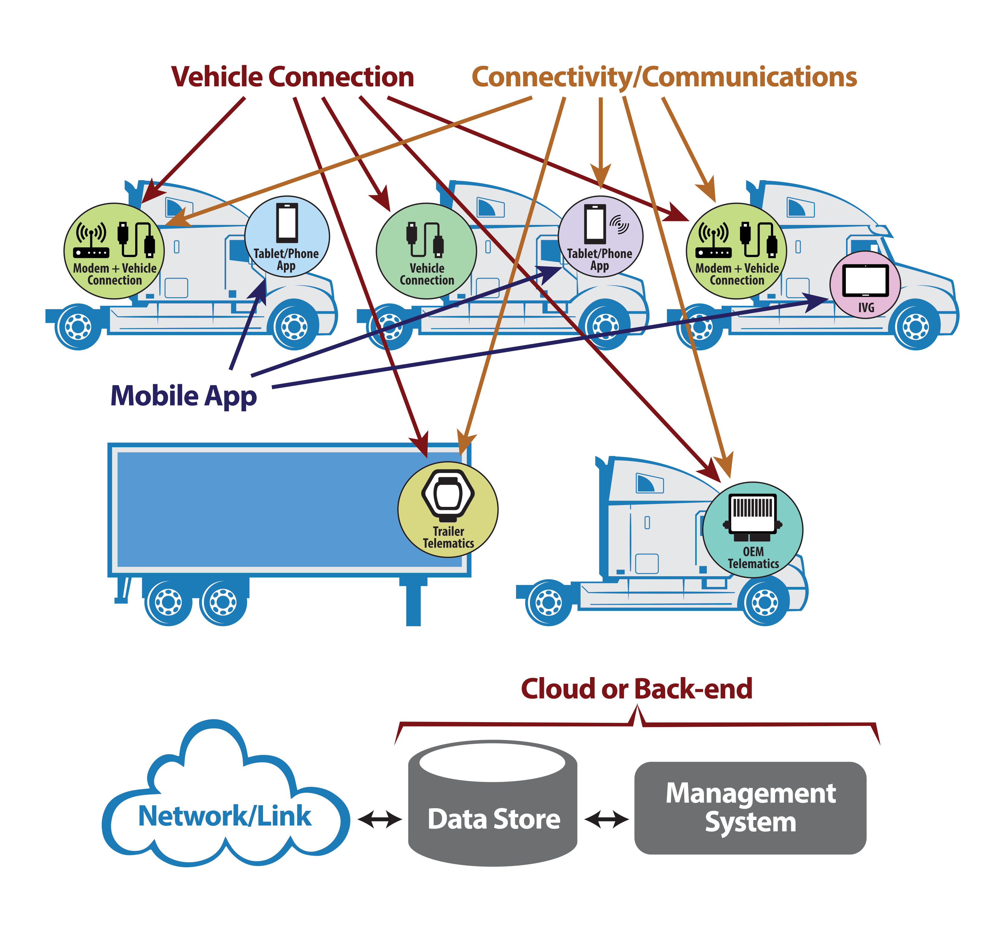
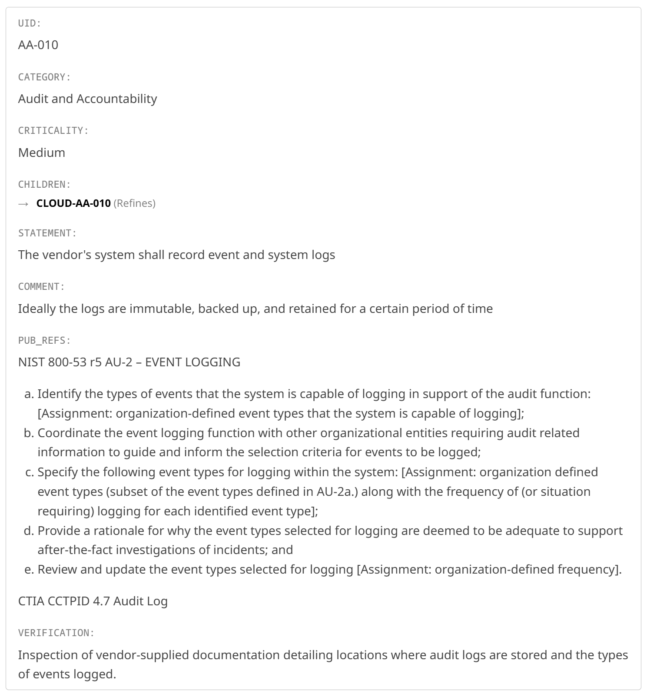
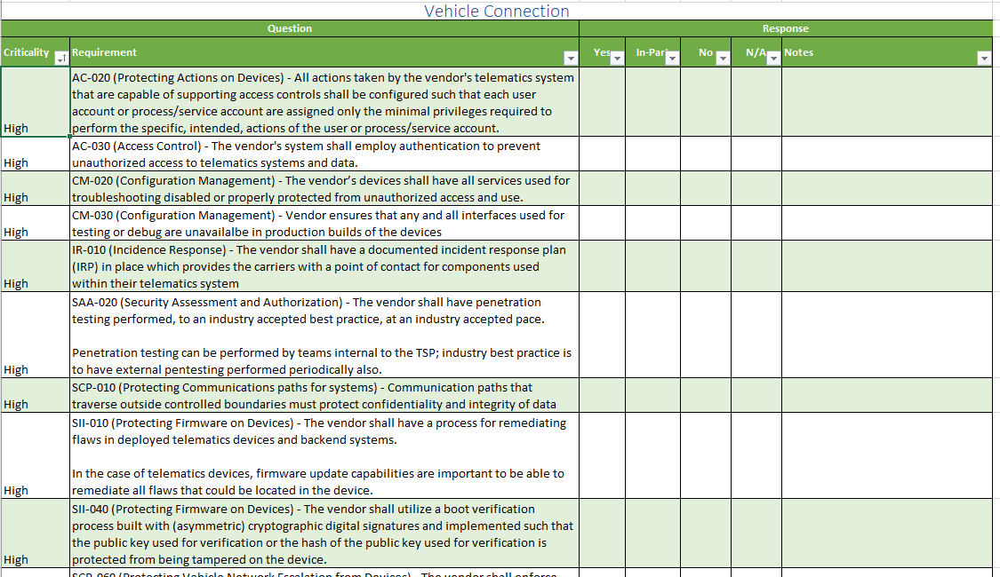

NMFTA Telematics Security Requirements Matrix
These recommended security requirements are intended to be informative, not directional in nature. While all reasonable steps have been taken to ensure that the recommendations are well-supported by our research and third-party verification, NMFTA and the parties contributing to these recommendations do not accept liability or responsibility for any damage or harm incurred as a result of actions taken based upon these recommendations.
1. Acknowledgements
We would like to acknowledge the contributions of DOT/Volpe Center and the members of the Cybersecurity Requirements for Telematics Systems working group. At the time this report was published, named participants included Derek Held of Zonar Systems, several representatives from Geotab, Altaz Valani of Security Compass, Mark Zachos, President of DG Technologies, Richard M. Litwinczuk, Senior Cybersecurity Engineer, Land Cyber Mission Assurance Program DND, Jacob D'Aoust, Junior Researcher, DeepMicro Limited. The working group benefited greatly from the contributions of several other fleet managers and telematics service providers (TSPs) who wish to remain anonymous.
The authors would also like to acknowledge the contributions of the NMFTA Request for Proposal Contract Template Language (RFPCTL) working group.
2. List of Abbreviations
| Abbreviation | Term |
|---|---|
| ASVS | Application Security Verification Standard |
| BSIMM | Building Security in Maturity Model |
| CAIQ | Consensus Assessment Initiative Questionnaire |
| CTIA | Cellular Telecommunications and Internet Association |
| Cyber ITL | Cyber Independent Testing Labs |
| DHS | Department of Homeland Security |
| DOT | Department of Transportation |
| DOT | Department of Transportation |
| ELD | Electronic Logging Device |
| ETSI | European Telecommunications Standards Institute |
| FM | Fleet Manager |
| FMI | Fleet Management Information |
| HMI | Human Machine Interface |
| IEC | International Electrotechnical Commission |
| IS | Information System |
| ISO | International Organization for Standardization |
| IVG | Intelligent Vehicle Gateway |
| MAC | Mandatory Access Controls |
| MASVS | Mobile Application Security Verification Standard |
| MSTG | Mobile Security Testing Guide |
| NIST | National Institute of Standards and Technology |
| NMFTA | National Motor Freight Traffic Association, Inc. |
| OWASP | Open Web Application Security Project |
| RFP | Request for Proposal |
| RFPCTL | Request for Proposal Contract Template Language |
3. Foreword
After the US DOT/Volpe published “Telematics Cybersecurity Primer for Agencies” in June 2017, we wanted to create resources for use by our motor freight carrier members to procure new telematics systems such as Electronic Logging Devices (ELD). Starting with the telematics cybersecurity controls and recommendations made by the Primer, a working group was assembled to complete a detailed list of testable cybersecurity requirements for all the components of a telematics system. We are fortunate to have been able to collaborate with DOT/Volpe and to see the efforts of the working group come to fruition through the publication of this report, which is a natural refinement of the security controls defined in the Primer.
4. Preface
THE INFORMATION CONTAINED HEREIN IS PROVIDED “AS IS” WITHOUT WARRANTY OF ANY KIND, EITHER EXPRESSED OR IMPLIED, INCLUDING, BUT NOT LIMITED TO, THE IMPLIED WARRANTIES OF MERCHANTABILITY AND FITNESS FOR A PARTICULAR PURPOSE. THE ENTIRE RISK AS TO THE QUALITY AND PERFORMANCE OF THE INFORMATION IS WITH THE USER.
5. Executive Summary
The purpose of this document is to provide government agency Fleet Managers and private industry stakeholders (e.g. TSPs, carriers, OEMs, Tier 1 suppliers, and others) responsible for the selection and procurement of Telematics, Fleet Management Information Systems (FMIS) and/or ELDs with situational awareness of potential cybersecurity risks of deploying such systems. This report also delivers a comprehensive list of cybersecurity requirements that should be satisfied by all components of a Telematics, Fleet Management Information System (FMIS) and/or Electronic Logging Devices (ELD), including validation steps for federal agencies and private industry stakeholders when deploying such systems.
The audience for this report is the agencies and private industry stakeholders responsible for the selection and procurement of Telematics, Fleet Management Information Systems (FMIS) and/or ELDs, as was the case in the previously released “Telematics Cybersecurity Primer for Agencies” report. The working group believes that any stakeholder that must procure Telematics, FMIS and/or ELDs will also find the requirements outlined in this document relevant. The complete list of requirements outlined in Appendix A will remain a living document which can respond to feedback from industry and technical experts. The requirements are hosted at https://github.com/nmfta-repo/nmfta-telematics_security_requirements and readers are encouraged to check there for updates to, and to offer feedback on, the requirements.
The comprehensive list of cybersecurity requirements for Telematics, FMIS and/or ELDs presented here was developed in collaboration with a diverse working group. The requirements are prioritized and include references to public authoritative sources containing more information, should the reader require additional details. The complete listing will provide purchasers with sufficient information to prioritize the need for cybersecurity in the Telematics, FMIS and/or ELD as well as validate the presence of the controls upon delivery of a system.
It is the recommendation of the working group that agencies and private stakeholders use these cybersecurity requirements when procuring new Telematics, FMIS and/or ELDs as well as when evaluating their current systems when the need to evaluate cybersecurity arises. The working group continues to refine the requirements and the reader is encouraged to visit https://github.com/nmfta-repo/nmfta-telematics_security_requirements to obtain the most up-to-date copy of the requirements, which is also available in a supplier questionnaire format. The site should also be used to give feedback to the working group on ways that the requirements can be further refined. It is NMFTA’s recommendation that motor freight carriers use these requirements as a natural successor to “Telematics Cybersecurity Primer for Agencies.”
The complete list of cybersecurity requirements can be found in Appendix A. Requirements are prioritized for use by stakeholders via a Criticality field to encourage adoption incrementally. These requirements are presented for all the components of a Telematics, FMIS and/or ELD: Vehicle Connection, Connectivity/Communications, Mobile App, and Cloud or Back-end and must be taken in their entirety for any assurances of cybersecurity to be realized.
6. Introduction
The deployment of Telematics, FMIS and/or ELDs in motor vehicles is pervasive today. As with any Information System (IS), it is the owner/operator of that system who bears the responsibility for managing the security of that system. This includes security of the information being collected, managed and stored, but also the security of the assets being monitored which – if not considered in procurement – could have their security posture worsened by the introduction of a Telematics, FMIS and/or ELD. In the case of agencies as the owners of an IS, their responsibility is detailed in the Federal Information Security Management Act of 2014[^1].
A core objective of this document is to provide information to owners of Telematics, FMIS and/or ELDs in the phases of procurement of these systems so they can manage risks to security. An additional objective is to provide comprehensive cybersecurity requirements that can be consulted by the owner and potential vendors to provide sufficient information that can prioritize the needs for cybersecurity in the Telematics, FMIS and/or ELD and validate the presence of the controls upon delivery of the system.
The approach taken to create this list included consultations with many authoritative sources of cybersecurity controls and then mapping them to the components of a Telematics, FMIS and/or ELD. To do this, the report considers a simplified model of a Telematics, FMIS and/or ELD. The four components of such a simplified system are broken down by Vehicle Connection, Connectivity/Communications, Mobile App, and Cloud or Back-end and are depicted in the figure below:
The Cybersecurity Requirements for Telematics Systems matrix uses the following terms for the components of a Telematics, FMIS and/or ELD:
- Vehicle Connection Device – The component of Telematics, FMIS and/or ELD that is connected to vehicle networks -- tractor and/or trailer. There may also be a Human Machine Interface (HMI) aspect to this component. In cases where the HMI is a separate device from that which connects to vehicular networks, then all the requirements identified as being applicable to the ‘Mobile App’ (see below) should be considered to apply to the HMI device.
- Connectivity/Communications – The component of a Telematics, FMIS and/or ELD which communicates data with the Cloud or Back-end (see below). This may or may not be the same device as the Vehicle Connection Device. In cases where they are the same device, both sets of the requirements identified as being applicable to a Vehicle Connection Device and the requirements identified as being applicable to Connectivity/Communications components should be considered to apply to the device.
- Cloud or Back-end – The component or components of a Telematics, FMIS and/or ELD which are internet facing, where data is collected, where commands or remote control of vehicular components are possible and where monitoring of the entire fleet or subsets thereof is made possible by dashboard or operations center features. In some cases, these components will be hosted by service providers, while in others they may be hosted by the owner. In either case, all the requirements identified as being applicable to Cloud or Back-end should be considered to apply to the device.
- Mobile App – The component of a Telematics, FMIS and/or ELD, which presents Human Machine Interfaces to drivers or other users of the system, may or may not have its own communications paths to the Cloud or Back-end and may or may not be hosted in a device separate from the Vehicle Connection Device, but is otherwise able to connect to and communicate with that vehicular component.
A goal of the working group was to ensure that stakeholders who procure equipment could also be capable of verifying that the equipment satisfies cybersecurity requirements. Therefore, each requirement includes a validation step which is intended to be executed by the purchaser. In some cases, the verification of the cybersecurity requirement requires more specialized knowledge than is reasonable to expect the purchaser to have. In these few cases, the validation steps recommend consulting a 3rd party report.
In recognizing that implementing cybersecurity for systems is an ongoing process for which there are rarely enough resources, each requirement has been each assigned a ‘criticality.’ These criticalities can be used to prioritize implementation by vendors or selection of vendors by purchasers.
We have avoided any requirements that are novel or otherwise unique in favor of referencing publicly available authoritative sources; at the time of drafting this report the authoritative references include:
- National Institute of Standards and Technology, Computer Security Resource Center. “Federal Information Security Modernization Act (FISMA).” Last modified December 2014. Accessed February 2020. http://csrc.nist.gov/drivers/documents/FISMA-final.pdf
- National Institute of Standards and Technology, Computer Security Resource Center. “Security and Privacy Controls for Information Systems and Organizations.” Last modified December 2020. Accessed May 2021. https://doi.org/10.6028/NIST.SP.800-53r5
- CTIA Certification LLC. “Cybersecurity Certification Test Plan for IoT Devices.” (CCTPID) Last modified January 2021. Accessed June 2021. https://ctiacertification.org/wp-content/uploads/2020/10/CTIA-Cybersecurity-Test-Plan-1.2.2.pdf
- ETSI Technical Committee Cyber Security (TC CYBER). “EN 303 645.” Last modified April 2020. Accessed May 2021. https://www.etsi.org/deliver/etsi_en/303600_303699/303645/02.01.00_30/en_303645v020100v.pdf
- Cloud Security Alliance. “Consensus Assessment Initiative Questionnaire (CAIQ).” Last modified September 2019. Accessed May 2021. https://cloudsecurityalliance.org/artifacts/consensus-assessments-initiative-questionnaire-v3-1
- Open Web Application Security Project (OWASP). “Application Security Verification Standard (ASVS).” Last modified March 2019. Accessed June 2019. https://github.com/OWASP/ASVS/raw/master/4.0/OWASP%20Application%20Security%20Verification%20Standard%204.0-en.pdf
- Cyber ITL. “Methodology.” Accessed June 2019. https://cyber-itl.org/about/methodology/
- ISO/IEC. “29147:2018 Information technology – Security techniques – Vulnerability disclosure.” Last modified Oct 2018. Accessed June 2019. https://www.iso.org/standard/72311.html
- Elazari, Amit. “#LegalBugBounty Hall of Fame.” Accessed June 2019. https://amitelazari.com/%23legalbugbounty-hof
- The Building Security In Maturity Model. “BSIMM.” Accessed June 2019. https://www.bsimm.com/download.html
- Open Web Application Security Project (OWASP). “Mobile Application Security Verification Standard (MASVS).” Accessed June 2019. https://github.com/OWASP/owasp-masvs/releases/tag/1.2RC
- Klinedinst, D. CMU, US DOT, FMCSA Office of Analysis, Research and Technology et. al. . “Cybersecurity Best Practices for Integration/Retrofit of Telematics and Aftermarket Electronic Systems into Heavy Vehicles.” Lost modified May 11th 2020. Accessed May 12th 2020. https://rosap.ntl.bts.gov/view/dot/49248
- DHS, Binding Operational Directive 20-01. Last modified September 2, 2020. Accessed Jan 18th 2021. https://cyber.dhs.gov/bod/20-01/
- Open Web Application Security Project (OWASP). “Embedded Application Security Project.” Last modified September 2020. Accessed May 2021. https://owasp.org/www-project-embedded-application-security/
Additional authoritative sources will be included in future versions of this report.
With regards to the FMCSA report "Cybersecurity Best Practices for Integration/Retrofit of Telematics and Aftermarket Electronic Systems into Heavy Vehicles" reference which is included in the references: the Cybersecurity Requirements for Telematics Systems Requirements matrix is aligned with the guidelines recommended by the FMCSA in their report. However, there are some differences between the audiences of the FMCSA report and the Cybersecurity Requirements for Telematics Systems Requirements matrix and also some requirements in the matrix which do not have a corresponding guideline in the FMCSA report. For more details on these topics please see the NMFTA bulletin on the FMCSA "Cybersecurity Best Practices for Integration/Retrofit of Telematics and Aftermarket Electronic Systems into Heavy Vehicles."
7. Cybersecurity Requirements for Telematics Systems Matrix Description
Each requirement captured is augmented with Criticality, Verification Steps, Public Requirements References, etc. A sample requirement is shown below:
The example requirement above demonstrates the form in which each requirement is presented in Appendix A.
UID
shows a unique value assigned to the requirement for easy reference
CATEGORY
groups like requirements together
CRITICALITY
assigns a ‘priority’: a recommendation to the purchaser for each requirement:
- High: the working group advises that purchasers do not accept proposals that do not meet all ‘High’ criticality requirements
- Medium: the working group advises that purchasers may accept proposals that do not meet ‘Medium’ criticality requirements when the failure is justifiable or mitigated by the vendor
- Low: the working group advises that purchasers may accept proposals that do not meet ‘Low’ criticality requirements
CHILDREN
Captures the applicable component categories; shows to which of the components of the Telematics, FMIS and/or ELD that this requirement applies by listing the child requirements that are specific to Cloud, Connectivity, Mobile, or Vehicle Connection components.
PUB_REFS
Captures the public requirements references / descriptions from external authoritative requirements as were known to the working group at the time of this draft. These references are included so that
- Purchasers can easily refer to the referenced sections of the document for further clarification on what are acceptable norms when evaluating vendor responses to RFPs AND
- Vendors can use the referenced sections of the documents for establishing common language and terms in the responses to RFPs to amortize the costs of developing detailed responses.
STATEMENT
Shows the requirement as it applies to the components of a Telematics, FMIS and/or ELD. The working group made every effort to make these requirements shorter and more succinct than the authoritative external references.
VERIFICATION
shows the steps which can be executed by purchasers to confirm that a given Telematics, FMIS and/or ELD satisfies this requirement. There are several cases where the working group does not expect that purchasers will perform their own verification. Where it is recommended that either a third party be engaged to provide an analysis which can be used by the purchasers to verify vendor claims, or that the vendor perform a demonstration that the requirement is satisfied which can be observed and confirmed by the purchaser. In such cases, rationale will be given. Due to the costly nature of delegating to a third party or of preparing a demonstration, this will only be recommended in cases where the requirement has been listed as having high Criticality. Because of the high Criticality of these requirements, it would be ideal to verify them relying on both a third party and a demonstration; the recommendation of the working group is that one or the other is sufficient.
- In the context of verification via reports from a third party it is acceptable to either, as a purchaser, contract the third party for testing or to verify documentation provided by a third party contracted by the vendor.
- In the context of demonstration by the vendor, it is important that the purchaser ensure the demonstration covers the non-functional aspects of these requirements, (e.g. for secure boot it is not sufficient to demonstrate that valid images are bootable, but rather it is necessary to demonstrate that tampered images are not bootable.)
COMMENT
Shows comments or notes from the working group.
8. Questionnaire Description
This project available in a supplier questionnaire format, one sheet for each of Vehicle Connection, Connectivity/Communications, Mobile App, and Cloud or Back-end.
These questionnaires can be sent in request to vendors to evaluate each of the applicable components of a telematics system that is being procured.
9. Recommendations and Conclusions
The working group has produced the comprehensive list of cybersecurity requirements for Telematics, FMIS and/or ELDs found in Appendix A. These requirements are prioritized via Criticality and assigned to one or more components in a generic Telematics, FMIS and/or ELD. They also include references to public, authoritative sources for more details on the requirement for the benefit of additional understanding on the part of the purchaser and vendor.
The working group recommends that federal agency fleet managers and private industry stakeholders use these requirements when procuring new Telematics, FMIS and/or ELDs, as well as when evaluating their current systems when the need to evaluate cybersecurity arises. It is NMFTA’s recommendation that motor freight carriers use these requirements as a natural successor to “Telematics Cybersecurity Primer for Agencies.” The requirements contained in this report complete several key areas which are missing in the Primer.
The working group continues to refine the requirements and the reader is encouraged to visit https://github.com/nmfta-repo/nmfta-telematics_security_requirements to obtain the most up-to-date copy of the requirements, which is also available in a supplier questionnaire format. The site should also be used to give feedback to the working group on ways that the requirements can be further refined.
10. Appendix A
In this section the reader will find all of the requirements of the TSRM. The latest version can be found at https://github.com/nmfta-repo/nmfta-telematics_security_requirements
The vendor's system shall record event and system logs
Ideally the logs are immutable, backed up, and retained for a certain period of time
NIST 800-53 r5 AU-2 – EVENT LOGGING
- Identify the types of events that the system is capable of logging in support of the audit function: [Assignment: organization-defined event types that the system is capable of logging];
- Coordinate the event logging function with other organizational entities requiring audit related information to guide and inform the selection criteria for events to be logged;
- Specify the following event types for logging within the system: [Assignment: organization defined event types (subset of the event types defined in AU-2a.) along with the frequency of (or situation requiring) logging for each identified event type];
- Provide a rationale for why the event types selected for logging are deemed to be adequate to support after-the-fact investigations of incidents; and
- Review and update the event types selected for logging [Assignment: organization-defined frequency].
CTIA CCTPID 4.7 Audit Log
Inspection of vendor-supplied documentation detailing locations where audit logs are stored and the types of events logged.
Vendor devices will implement least privilege for the memory spaces of processes handling protected data. i.e. data in-use, of the categories of sensitive protected data above, or shall be segmented from software components which do not handle such data. Acceptable segmentations include Mandatory Filesystem Access Controls and Mandatory Volatile Memory Access Controls.
e.g. a Linux system with MAC configured to deny access to the processes dealing with protected data and also denying debugger access to the memory space of those processes.
NIST 800-53 r5 SI-16 - MEMORY PROTECTION Implement the following controls to protect the system memory from unauthorized code execution: [Assignment: organization-defined controls].
NIST 800-53 r5 AC-6 (4) - LEAST PRIVILEGE | SEPARATE PROCESSING DOMAINS Provide separate processing domains to enable finer-grained allocation of user privileges.
NIST 800-53 r5 SC-2 – SEPARATION OF SYSTEM AND USER FUNCTIONALITY Separate user functionality, including user interface services, from system management functionality.
NIST 800-53 r5 SC-2 (1) - SEPARATION OF SYSTEM AND USER FUNCTIONALITY | INTERFACES FOR NON-PRIVILEGED USERS Prevent the presentation of system management functionality at interfaces to nonprivileged users.
NIST 800-53 r5 AC-25 – REFERENCE MONITOR Implement a reference monitor for [Assignment: organization-defined access control policies] that is tamperproof, always invoked, and small enough to be subject to analysis and testing, the completeness of which can be assured.
UL 1376 3.9 Least privilege: Systems must implement 'least privilege', or utilize hardware based features to protect sensitive code and data
Inspection of vendor-supplied design documentation detailing the privilege separation of the device. Ensure that 1) a Mandatory Access Control scheme is employed 2) there are separate domains/users/roles (whichever is applicable to the MAC) for dealing with the sensitive information (vendor defined, see SCP-030) and finally 3) accounts for running system tasks (e.g. crond, portmap, systemd) are not in the separate domains/users/roles for dealing with sensitive information.
All actions taken by the vendor's telematics system that are capable of supporting access controls shall be configured such that each user account or process/service account are assigned only the minimal privileges required to perform the specific, intended, actions of the user or process/service account.
This principle underpins system security
NIST 800-53 r5 AC-6 – LEAST PRIVILEGE Employ the principle of least privilege, allowing only authorized accesses for users (or processes acting on behalf of users) that are necessary to accomplish assigned organizational tasks.
NIST 800-53 r5 AC-6 (1) - LEAST PRIVILEGE | AUTHORIZE ACCESS TO SECURITY FUNCTIONS Authorize access for [Assignment: organization-defined individuals or roles] to: (a) [Assignment: organization-defined security functions (deployed in hardware, software, and firmware)]; and (b) [Assignment: organization-defined security-relevant information].
CTIA CCTPID 5.17 Design-In Features “designed to isolate critical functions from less critical functions”
OWASP E5 – Identity Management
Inspection of vendor documentation or a demonstration by the vendor that details how software privileges are assigned in vendor systems. Ensure that principles of least privilege are met.
The vendor's system shall employ cryptographic authentication to prevent unauthorized access to telematics systems and data.
Identity management is critical
e.g. PINs, single-sign on with carrier’s identity provider (SAML or other), vendor managed identity provider (SAML or other)
NIST 800-53 r5 AC-6 – LEAST PRIVILEGE Employ the principle of least privilege, allowing only authorized accesses for users (or processes acting on behalf of users) that are necessary to accomplish assigned organizational tasks.
NIST 800-53 r5 AC-3 – ACCESS ENFORCEMENT Enforce approved authorizations for logical access to information and system resources in accordance with applicable access control policies.
FMCSA GDL 32 Make sure local wireless interfaces like Bluetooth or Wi-Fi don't provide admin access without authentication.
UL 1376 4.1 Sensitive services require authentication: Sensitive services must require authentication and ensure the confidentiality and integrity of data
UL 1376 6.3 Authentication for remote communications: Connections to remote services must implement cryptographic authentication
Inspection of vendor documentation detailing the methods used to authenticate users. Ensure that an acceptable method of authentication is available for all components which be interfaced-to by carrier staff and systems.
In the case of single-sign-on delegation, ensure that your (carrier) system requirements are met with respect to security assertions (e.g. SAML is supported).
The vendor shall identify all instances where the telematics system includes actions that cannot support access authentication and/or execute with elevated privileges
NIST 800-53 r5 AC-14 – PERMITTED ACTIONS WITHOUT IDENTIFICATION OR AUTHENTICATION a. Identify [Assignment: organization-defined user actions] that can be performed on the system without identification or authentication consistent with organizational mission and business functions; and b. Document and provide supporting rationale in the security plan for the system, user actions not requiring identification or authentication.
NIST 800-53 r5 AC-6 – LEAST PRIVILEGE Employ the principle of least privilege, allowing only authorized accesses for users (or processes acting on behalf of users) that are necessary to accomplish assigned organizational tasks.
Inspection of vendor-supplied documentation listing system actions and interfaces that do not require authentication. Ensure that the list is short, that each entry in the list is acceptable to you (the carrier), and there is a justifiable reason for no-authentication on each item in the list.
Identifying information about the connected devices will not be made available without authentication first.
e.g. it should not be possible to identify the device type nor firmware version by port scanning a connected device. Also, it should not be able to determine that a vehicle is operational or not via non-authorized connections.
NIST 800-53 r5 AC-14 – PERMITTED ACTIONS WITHOUT IDENTIFICATION OR AUTHENTICATION a. Identify [Assignment: organization-defined user actions] that can be performed on the system without identification or authentication consistent with organizational mission and business functions; and b. Document and provide supporting rationale in the security plan for the system, user actions not requiring identification or authentication.
Inspection of vendor-supplied documentation listing system actions and interfaces that do not require authentication. Ensure that no information leaks are possible from these unauthenticated actions.
All remote access methods and possible remote actions to/on telematics system shall be documented.
NIST 800-53 r5 AC-17 – REMOTE ACCESS a. Establish and document usage restrictions, configuration/connection requirements, and implementation guidance for each type of remote access allowed; and b. Authorize each type of remote access to the system prior to allowing such connections
Inspection of vendor-supplied documentation listing the methods of remote access and the actions that can be performed. Ensure that the remote access methods and actions are justifiable and also ensure that all remote methods require authentication (i.e. ensure none of them are listed in vendor documentation for AC-040)
For all components of the system, the vendor shall provide a listing of all wireless communication interfaces to the system and specify how the interfaces can be configured and/or disabled.
e.g. Bluetooth, cellular, satellite, Wi-Fi hotspot, Wi-Fi client, infrared, NFC, RFID
NIST 800-53 r5 AC-18 – WIRELESS ACCESS a. Establish configuration requirements, connection requirements, and implementation guidance for each type of wireless access; and b. Authorize each type of wireless access to the system prior to allowing such connections.
Inspection of vendor-supplied documentation detailing what wireless communications hardware is present, which wireless communications methods can be disabled, and how wireless communications enablement or disablement is managed.
The vendor shall not use any deprecated encryption+authentication on any Wi-Fi interface of the device. At the time of drafting this includes WEP, WPS or open/none.
FMCSA GDL 39 Only use WPA2 authentication / encryption. Never use WEP, WPS, or “open” Wi-Fi.
UL 1376 6.2 Industry standard Wi-Fi security: Device must support industry accepted wireless security defaults for any Wi-Fi connections
Test that the device will not connect to WEP, WPS or open Wi-Fi hotspots.
The vendor shall implement, for all Bluetooth interfaces, pairing that must be specifically allowed by physical controls on the device and be time-limited. Furthermore, pairing will not use legacy pairing or passkey entry.
FMCSA GDL 44 Make sure Bluetooth devices support and use Secure Simple Pairing (SSP) rather than legacy pairing.
FMCSA GDL 45 Numeric Comparison is preferred to Passkey Entry for pairing.
Test that it is not possible to pair with the device 5 minutes after enabling pairing on the device. Test that pairing does not support SSP or passkey, only numeric comparison.
Any and all software or firmware implementing wireless interface encrytion+authentication (those satisfying AC-061 and AC-062 above) will be prepared for future deprecation of methods. i.e. That software/firmware is upgradable.
Inspection of vendor-supplied documentation confirming upgradability of the software implementing encryption+authentication of wireless interfaces.
Authentication attempts to the vendor’s devices and backends shall be rate-limited to an industry accepted rate.
NIST 800-53 r5 AC-7 - UNSUCCESSFUL LOGON ATTEMPTS a. Enforce a limit of [Assignment: organization-defined number] consecutive invalid logon attempts by a user during a [Assignment: organization-defined time period]; and b. Automatically [Selection (one or more): lock the account or node for an [Assignment: organization-defined time period]; lock the account or node until released by an administrator; delay next logon prompt per [Assignment: organization-defined delay algorithm]; notify system administrator; take other [Assignment: organization-defined action]] when the maximum number of unsuccessful attempts is exceeded.
CTIA CCTPID 5.2 Password Management Test
UL 1376 2.8 Brute force protection: Implement protection against brute force attacks
Inspection of vendor-supplied documentation detailing the methods used to enforce rate limiting.
All authentication offered on device-local interfaces shall expect credentials which are unique to each device instance and uncorrelated to any and all public information about the device.
This requirement applies to many common facilities found on devices. e.g. local management portals, local Wi-Fi access points, Bluetooth pairing codes, local ssh servers, local serial console logins
ETSI EN 303 645 V2.1.0 Provision 5.1-1 Where passwords are used and in any state other than the factory default, all consumer IoT device passwords shall be unique per device or defined by the user.
FMCSA GDL 32 Make sure local wireless interfaces like Bluetooth or Wi-Fi don't provide admin access without authentication.
FMCSA GDL 40 Always use a complex, unique password per device.
FMCSA GDL 43 Always use a complex, unique password per device.
Inspection of vendor-supplied documentation detailing the local authentication and how the unique credential is generated. Ensure that the generation of this credential cannot be guessed from public information.
All components of the vendor's system shall be configured to utilize the principle of least functionality and use only the services necessary for secure operations of the system. Additionally, customers should have the option of disabling any features they do not want or do not need by having unnecessary services’ executables removed or at least disabled such that their execution (by even superuser) is not possible in deployed systems.
E.g. this is particularly true of unauthenticated or unencrypted transport services (which would not satisfy protected communication requirements above) such as File Transfer Protocol, telnet, Short Messaging Service, etc.
NIST 800-53 r5 CM-7 – LEAST FUNCTIONALITY a. Configure the system to provide only [Assignment: organization-defined mission essential capabilities]; and b. Prohibit or restrict the use of the following functions, ports, protocols, software, and/or services: [Assignment: organization-defined prohibited or restricted functions, system ports, protocols, software, and/or services].
CTIA CCTPID 5.17 Design-In Features “designed to deny all inbound and outbound network communications, except for those that are essential for the device to operate properly“
FMCSA GDL 20 Give applications the least privilege they need to function
FMCSA GDL 21 Where possible, remove code that isn't used
OWASP E6 – Embedded Framework and C-Based Hardening
UL 1376 3.3 Unwanted functionality can be disabled: Customer access to disable unwanted features
UL 1376 3.6 Unwanted / Unnecessary features removed: Unwanted / unnecessary features are removed
Inspection of vendor documentation asserting that unnecessary software or services are not present or disabled on the device.
The vendor’s devices shall have all services used for troubleshooting disabled or properly protected from unauthorized access and use.
Deploying with test or debug facilities enabled is egregious
NIST 800-53 r5 CM-7 – LEAST FUNCTIONALITY a. Configure the system to provide only [Assignment: organization-defined mission essential capabilities]; and b. Prohibit or restrict the use of the following functions, ports, protocols, software, and/or services: [Assignment: organization-defined prohibited or restricted functions, system ports, protocols, software, and/or services].
FMCSA GDL 54 Disable unnecessary debugging interfaces in production.
FMCSA GDL 55 Authenticate debugging and diagnostic interfaces.
Inspection of vendor-supplied documentation detailing all services (listening ports or outbound connections) available on deployed devices.
Ensure that none of the services available are without authentication (see AC-030) and furthermore that any troubleshooting functionality is ideally disabled, or at least the service available requires unique credentials for authorization of that feature.
Vendor ensures that any and all interfaces used for testing or debug are unavailable in production builds of the devices
Deploying with test or debug facilities enabled is egregious.
Functionality that allows for the direct execution of scripts or commands by the device or system can often be exploited by a malicious party and therefore must be disabled.
NIST 800-53 r5 CM-7 – LEAST FUNCTIONALITY a. Configure the system to provide only [Assignment: organization-defined mission essential capabilities]; and b. Prohibit or restrict the use of the following functions, ports, protocols, software, and/or services: [Assignment: organization-defined prohibited or restricted functions, system ports, protocols, software, and/or services].
CAIQ CCC-03.6 Are mechanisms in place to ensure that all debugging and test code elements are removed from released software versions?
FMCSA GDL 31 Make sure debugging interfaces (JTAG, serial, USB) have authentication required.
FMCSA GDL 54 Disable unnecessary debugging interfaces in production.
FMCSA GDL 55 Authenticate debugging and diagnostic interfaces.
OWASP E7 – Usage of Debug Code and Interfaces
UL 1376 3.1 Protect communication and debug ports: Communication and debug ports must be protected against misuse
UL 1376 4.4 No direct execution of commands / scripts: No direct execution of scripts / commands using system interfaces and or user-facing components
Inspection of vendor-supplied documentation detailing all service (listening ports or outbound connections) available on deployed devices.
Ensure that there are no services for test or debug active in the device. Ideally, look for assurances that any test or debug executables cannot be run on the device.
The vendors’ devices shall have a default system configuration that ensures security ‘out of the box’. In other words, the default configuration should be the most-secure and any additional features should be disabled by default and have their security implications communicated in documentation.
Sufficient customer guidance should be provided to allow for that customer to understand the risks associated with enabling any insecure features of the device.
UL 1376 3.2 Systems configured to secure defaults: Systems must be configured to secure defaults
Inspection of vendor-supplied documentation confirming that a) all device configuration options have their security tradeoffs documented and that b) the device’s default configuration is the most-secure.
All remote hosts of the vendor's system shall be configured to uniquely identify and authenticate all other remote hosts of the system and/or any other interfacing systems.
e.g. that a remote system authenticate the other remote parties by referring to the unique identifiers using mutually authenticated TLS
NIST 800-53 r5 IA-3 – DEVICE IDENTIFICATION AND AUTHENTICATION Uniquely identify and authenticate [Assignment: organization-defined devices and/or types of devices] before establishing a [Selection (one or more): local; remote; network] connection.
Inspection of vendor-supplied documentation detailing how devices and components are uniquely identified.
Ensure that interfacing systems can query and/or inspect these unique identifiers.
Any authenticators (unique identification) for devices used in vendor’s systems shall be uncorrelated to any and all public information about the device, e.g. lot number, product number, serial number MAC address are all unacceptable inputs to device identifiers.
Where public information is any information that is visible (externally or internally) on the device or discoverable by searches based on that visible information.
NIST 800-53 r5 IA-3 – DEVICE IDENTIFICATION AND AUTHENTICATION Uniquely identify and authenticate [Assignment: organization-defined devices and/or types of devices] before establishing a [Selection (one or more): local; remote; network] connection.
Inspection of vendor documentation detailing the inputs to the authenticator generation process per device. Ensure that no input is information that can be easily-guessed from simple facts about the device.
Cryptographic modules used in the vendors system shall be compliant with Federal Information Processing Standards (FIPS) 140-2: Level 1.
e.g. • For each attempt to use the authentication mechanism, the probability shall be less than one in 1,000,000 that a random attempt will succeed, or a false acceptance will occur (e.g., guessing a password or PIN, false acceptance error rate of a biometric device, or some combination of authentication methods) • For multiple attempts to use the authentication mechanism during a one-minute period, the probability shall be less than one in 100,000 that a random attempt will succeed, or a false acceptance will occur • Feedback of authentication data to an operator shall be obscured during authentication (e.g., no visible display of characters when entering a password). • Feedback provided to an operator during an attempted authentication shall not weaken the strength of the authentication mechanism
NIST 800-57 Part 3 r1 - 2.3.3 Cryptographic Modules 3. Ensure that relying party and user cryptographic modules are validated as meeting FIPS 140-2 Level 1 or higher.
UL 1376 2.4 Industry-standard cryptography: Industry standard cryptographic algorithms must be used for security services.
UL 1376 2.5 RNG with sufficient entropy: Random number generation must ensure sufficient entropy
Inspection of vendor-supplied documentation detailing their procurement requirements for cryptographic modules.
Ensure that their procurement processes require that all cryptographic modules are FIPS 140-2 compliant.
The vendor shall have a documented incident response plan (IRP) in place which provides the carriers with a point of contact for components used within their telematics system
TSPs must demonstrate this level of maturity to be trusted with business critical functions
NIST 800-53 r5 IR-8 - INCIDENT RESPONSE PLAN a. Develop an incident response plan that:
- Provides the organization with a roadmap for implementing its incident response capability;
- Describes the structure and organization of the incident response capability;
- Provides a high-level approach for how the incident response capability fits into the overall organization;
- Meets the unique requirements of the organization, which relate to mission, size, structure, and functions;
- Defines reportable incidents;
- Provides metrics for measuring the incident response capability within the organization;
- Defines the resources and management support needed to effectively maintain and mature an incident response capability;
- Addresses the sharing of incident information;
- Is reviewed and approved by [Assignment: organization-defined personnel or roles] [Assignment: organization-defined frequency]; and
- Explicitly designates responsibility for incident response to [Assignment: organization defined entities, personnel, or roles].
- Distribute copies of the incident response plan to [Assignment: organization-defined incident response personnel (identified by name and/or by role) and organizational elements];
- Update the incident response plan to address system and organizational changes or problems encountered during plan implementation, execution, or testing;
- Communicate incident response plan changes to [Assignment: organization-defined incident response personnel (identified by name and/or by role) and organizational elements]; and
- Protect the incident response plan from unauthorized disclosure and modification.
FMCSA GDL 14 Employ an incident response process.
Inspection of vendor-supplied documentation detailing the vendor’s incident response process.
Ensure that it documents the methods that can be used to notify the vendor of a security incident.
The vendor shall have procedures in place to ensure that components outside of the carrier’s direct control are not updated or modified without prior coordination and approval by an organization-defined individual or role
NIST 800-53 r5 MA-2 – CONTROLLED MAINTENANCE a. Schedule, document, and review records of maintenance, repair, and replacement on system components in accordance with manufacturer or vendor specifications and/or organizational requirements; b. Approve and monitor all maintenance activities, whether performed on site or remotely and whether the system or system components are serviced on site or removed to another location; c. Require that [Assignment: organization-defined personnel or roles] explicitly approve the removal of the system or system components from organizational facilities for off-site maintenance, repair, or replacement; d. Sanitize equipment to remove the following information from associated media prior to removal from organizational facilities for off-site maintenance, repair, or replacement: [Assignment: organization-defined information]; e. Check all potentially impacted controls to verify that the controls are still functioning properly following maintenance, repair, or replacement actions; and f. Include the following information in organizational maintenance records: [Assignment: organization-defined information].
Inspection of vendor-supplied documentation detailing their maintenance/release process.
Ensure that there is a process where you (the carrier) are contacted and coordinated-with before the systems upon which you rely undergo maintenance procedures.
The vendor shall have procedures in place to test backup restoration processes of their own systems and their own facilities on at least an annual basis.
TSPs must demonstrate this level of maturity to be trusted with business critical functions
NIST 800-53 r5 CP-4 - CONTINGENCY PLAN TESTING a. Test the contingency plan for the system [Assignment: organization-defined frequency] using the following tests to determine the effectiveness of the plan and the readiness to execute the plan: [Assignment: organization-defined tests]. b. Review the contingency plan test results; and c. Initiate corrective actions, if needed.
NIST 800-53 r5 CP-9 (1) - SYSTEM BACKUP | TESTING FOR RELIABILITY AND INTEGRITY Test backup information [Assignment: organization-defined frequency] to verify media reliability and information integrity.
CAIQ BCR-11.7 Do you test your backup or redundancy mechanisms at least annually?
Inspection of vendor-supplied documentation detailing backup and restore procedures.
The vendor must have a disposal of goods policy which covers the management of all computer equipment and storage media dealing with customer information including but not limited to PII and customer business operations data.
ISO 27001 A.8.3.2 Disposal of Media
NIST 800-88 R1
Inspection of vendor-supplied documentation detailing their disposal of goods procedures; confirm the presence of specific mention of handling of their customer's information.
The vendor's disposal of goods policy must forbid disposal in skips, dumps or landfills until it has been processed to purge or clear previously stored information.
ISO 27001 A.8.3.2 Disposal of Media
NIST 800-88 R1
Inspection of vendor-supplied documentation detailing their disposal of goods procedures; confirm that disposal of systems in skips or landfills is not allowed unless the systems have been purged or cleared.
The vendor's processes to remove previously stored information must include acceptable processes for magnetic media, solid-state media, printers, scanners, laptops, smartphones, server and desktop computers.
NIST 800-88 R1 Appendix A -- Minimum Sanitization Recommendations
Inspection of vendor-supplied documentation detailing their disposal of goods procedures; confirm that there are procedures that cover all of magnetic media, solid-state media, printers, scanners, laptops, smartphones, server and desktop computers
Vendors must provide manual backup/override capabilities to their safety related services to ensure that any failure of the device does not result in a safety issue.
UL 1376 4.3 Manual back-up / override for safety critical operations: Manual backup/override must be provided for safety related services
Inspection of vendor-supplied documentation detailing the system’s safety related services and the manual backup/override associated with them. Test the manual override capabilities to confirm their functionality.
The vendor shall have a System Security Plan (SSP) which details a clear and concise understanding of authorization boundaries of the telematics system.
NIST 800-53 r5 PL-2 - SECURITY AND PRIVACY PLANS a. Develop security and privacy plans for the system that:
- Are consistent with the organization’s enterprise architecture;
- Explicitly define the constituent system components;
- Describe the operational context of the system in terms of mission and business processes;
- Identify the individuals that fulfill system roles and responsibilities;
- Identify the information types processed, stored, and transmitted by the system;
- Provide the security categorization of the system, including supporting rationale;
- Describe any specific threats to the system that are of concern to the organization;
- Provide the results of a privacy risk assessment for systems processing personally identifiable information;
- Describe the operational environment for the system and any dependencies on or connections to other systems or system components;
- Provide an overview of the security and privacy requirements for the system;
- Identify any relevant control baselines or overlays, if applicable;
- Describe the controls in place or planned for meeting the security and privacy requirements, including a rationale for any tailoring decisions;
- Include risk determinations for security and privacy architecture and design decisions;
- Include security- and privacy-related activities affecting the system that require planning and coordination with [Assignment: organization-defined individuals or groups]; and
- Are reviewed and approved by the authorizing official or designated representative prior to plan implementation.
- Distribute copies of the plans and communicate subsequent changes to the plans to [Assignment: organization-defined personnel or roles];
- Review the plans [Assignment: organization-defined frequency];
- Update the plans to address changes to the system and environment of operation or problems identified during plan implementation or control assessments; and
- Protect the plans from unauthorized disclosure and modification.
Inspection of vendor-supplied SSP document that details the authorization boundaries of telematics system.
Ensure that the document details which entity has responsibility for each component of the system, the system baseline and security posture within the boundaries.
The vendor shall have a documented Information Security Architecture (ISA) for the telematics system.
NIST 800-53 r5 PL-8 - SECURITY AND PRIVACY ARCHITECTURES a. Develop security and privacy architectures for the system that:
- Describe the requirements and approach to be taken for protecting the confidentiality, integrity, and availability of organizational information;
- Describe the requirements and approach to be taken for processing personally identifiable information to minimize privacy risk to individuals;
- Describe how the architectures are integrated into and support the enterprise architecture; and
- Describe any assumptions about, and dependencies on, external systems and services;
- Review and update the architectures [Assignment: organization-defined frequency] to reflect changes in the enterprise architecture; and
- Reflect planned architecture changes in security and privacy plans, Concept of Operations (CONOPS), criticality analysis, organizational procedures, and procurements and acquisitions.
Inspection of vendor-supplied ISA documentation.
Ensure that the ISA document at a minimum includes: Approach to confidentiality, integrity, and availability protections
How the telematics system’s security architecture supports the enterprise architecture’s security
Security assumptions and dependencies on external services
Frequency of reviews and updates to the telematics system security architecture
The vendor shall provide interfaces to their backend using the Open Telematics API -- enabling carriers to have failover to other providers to avoid interruptions due to single point of failure in provider telematics services.
Telematics is business critical to the carriers, failover is needed for this service
CAIQ BCR-01.1 Does your organization have a plan or framework for business continuity management or disaster recovery management?
CAIQ BCR-01.6 Do you provide a tenant-triggered failover option?
Inspection of vendor-supplied documentation detailing the interfaces (APIs) offered by the vendor.
Ensure that your (carrier) systems can failover to other providers with the same interfaces (APIs).
The vendor shall have personnel security policies & procedures, position risk categorization, personnel screening, personnel termination, personnel transfer, access agreements and third-party personnel security.
NIST 800-53 r5 PS-1 - POLICY AND PROCEDURES
- Develop, document, and disseminate to [Assignment: organization-defined personnel or roles]:
- [Selection (one or more): Organization-level; Mission/business process-level; System level] personnel security policy that:
- Addresses purpose, scope, roles, responsibilities, management commitment, coordination among organizational entities, and compliance; and
- Is consistent with applicable laws, executive orders, directives, regulations, policies, standards, and guidelines; and
- Procedures to facilitate the implementation of the personnel security policy and the associated personnel security controls;
- Designate an [Assignment: organization-defined official] to manage the development, documentation, and dissemination of the personnel security policy and procedures; and
- Review and update the current personnel security:
- Policy [Assignment: organization-defined frequency] and following [Assignment: organization-defined events]; and
- Procedures [Assignment: organization-defined frequency] and following [Assignment: organization-defined events].
NIST 800-53 r5 PS-7 - EXTERNAL PERSONNEL SECURITY a. Establish personnel security requirements, including security roles and responsibilities for external providers; b. Require external providers to comply with personnel security policies and procedures established by the organization; c. Document personnel security requirements; d. Require external providers to notify [Assignment: organization-defined personnel or roles] of any personnel transfers or terminations of external personnel who possess organizational credentials and/or badges, or who have system privileges within [Assignment: organization defined time period]; and e. Monitor provider compliance with personnel security requirements.
Inspection of vendor-supplied documents detailing their personal security policies & procedures.
Vendor shall have risk assessments conducted at an industry accepted rate. Resulting risk assessment documentation should include all components and the overall system that is within the vendor's control. The rate suggested is twice per product release; both at product design and at integration phases
NIST 800-53 r5 RA-3 – RISK ASSESSMENT a. Conduct a risk assessment, including:
- Identifying threats to and vulnerabilities in the system;
- Determining the likelihood and magnitude of harm from unauthorized access, use, disclosure, disruption, modification, or destruction of the system, the information it processes, stores, or transmits, and any related information; and
- Determining the likelihood and impact of adverse effects on individuals arising from the processing of personally identifiable information;
- Integrate risk assessment results and risk management decisions from the organization and mission or business process perspectives with system-level risk assessments;
- Document risk assessment results in [Selection: security and privacy plans; risk assessment report; [Assignment: organization-defined document]];
- Review risk assessment results [Assignment: organization-defined frequency];
- Disseminate risk assessment results to [Assignment: organization-defined personnel or roles]; and
- Update the risk assessment [Assignment: organization-defined frequency] or when there are significant changes to the system, its environment of operation, or other conditions that may impact the security or privacy state of the system.
FMCSA GDL 1 Conduct architectural analysis and/or threat modeling during system design
Inspection of vendor-supplied documentation stating their previous and planned risk assessment dates and detailing the documentation requirements of their risk assessments.
The vendor shall use the results of risk assessments to influence systems development and processes.
NIST 800-53 r5 RA-3 – RISK ASSESSMENT a. Conduct a risk assessment, including:
- Identifying threats to and vulnerabilities in the system;
- Determining the likelihood and magnitude of harm from unauthorized access, use, disclosure, disruption, modification, or destruction of the system, the information it processes, stores, or transmits, and any related information; and
- Determining the likelihood and impact of adverse effects on individuals arising from the processing of personally identifiable information;
- Integrate risk assessment results and risk management decisions from the organization and mission or business process perspectives with system-level risk assessments;
- Document risk assessment results in [Selection: security and privacy plans; risk assessment report; [Assignment: organization-defined document]];
- Review risk assessment results [Assignment: organization-defined frequency];
- Disseminate risk assessment results to [Assignment: organization-defined personnel or roles]; and
- Update the risk assessment [Assignment: organization-defined frequency] or when there are significant changes to the system, its environment of operation, or other conditions that may impact the security or privacy state of the system.
CAIQ GRM-08.1 Do risk assessment results include updates to security policies, procedures, standards, and controls to ensure they remain relevant and effective?
FMCSA GDL 1 Conduct architectural analysis and/or threat modeling during system design
Inspection of vendor-supplied statement of the use of risk assessments in influencing the ongoing development of their products.
The vendor shall have an Information Security Management Plan (ISMP).
Sometimes referred to as ISMS as in ISO/IEC 2700.
May include any of the following: System interconnections, System monitoring plan, Vulnerability management plan, Incident response plan (see IR-010 for authoritative requirement), System Security Plan (SSP) or System Security , Authorization Agreement (SSAA), Contingency Plan, Contingency Plan Test Results, Federal Information Processing Standards (FIPS) 199 Categorization, Privacy Threshold Analysis (PTA), E-Authentication, Security Test and Evaluation (ST&E) Plan, Plan of Action and Milestones (POAM), Annual Self-Assessments
NIST 800-53 r5 CA-2 - CONTROL ASSESSMENTS a. Select the appropriate assessor or assessment team for the type of assessment to be conducted; b. Develop a control assessment plan that describes the scope of the assessment including:
- Controls and control enhancements under assessment;
- Assessment procedures to be used to determine control effectiveness; and
- Assessment environment, assessment team, and assessment roles and responsibilities;
- Ensure the control assessment plan is reviewed and approved by the authorizing official or designated representative prior to conducting the assessment;
- Assess the controls in the system and its environment of operation [Assignment: organization-defined frequency] to determine the extent to which the controls are implemented correctly, operating as intended, and producing the desired outcome with respect to meeting established security and privacy requirements;
- Produce a control assessment report that document the results of the assessment; and
- Provide the results of the control assessment to [Assignment: organization-defined individuals or roles].
NIST 800-53 r5 CA-5 - PLAN OF ACTION AND MILESTONES a. Develop a plan of action and milestones for the system to document the planned remediation actions of the organization to correct weaknesses or deficiencies noted during the assessment of the controls and to reduce or eliminate known vulnerabilities in the system; and b. Update existing plan of action and milestones [Assignment: organization-defined frequency] based on the findings from control assessments, independent audits or reviews, and continuous monitoring activities.
NIST 800-53 r5 CA-6 - AUTHORIZATION a. Assign a senior official as the authorizing official for the system; b. Assign a senior official as the authorizing official for common controls available for inheritance by organizational systems; c. Ensure that the authorizing official for the system, before commencing operations:
- Accepts the use of common controls inherited by the system; and
- Authorizes the system to operate;
- Ensure that the authorizing official for common controls authorizes the use of those controls for inheritance by organizational systems;
- Update the authorizations [Assignment: organization-defined frequency].
NIST 800-53 r5 CP-1 - POLICY AND PROCEDURES a. Develop, document, and disseminate to [Assignment: organization-defined personnel or roles]:
- [Selection (one or more): Organization-level; Mission/business process-level; System level] contingency planning policy that:
- Addresses purpose, scope, roles, responsibilities, management commitment, coordination among organizational entities, and compliance; and
- Is consistent with applicable laws, executive orders, directives, regulations, policies, standards, and guidelines; and
- Procedures to facilitate the implementation of the contingency planning policy and the associated contingency planning controls;
- Designate an [Assignment: organization-defined official] to manage the development, documentation, and dissemination of the contingency planning policy and procedures; and
- Review and update the current contingency planning:
- Policy [Assignment: organization-defined frequency] and following [Assignment: organization-defined events]; and
- Procedures [Assignment: organization-defined frequency] and following [Assignment: organization-defined events].
CAIQ GRM-04.1 Do you provide tenants with documentation describing your Information Security Management Program (ISMP)?
CAIQ GRM-04.2 Do you review your Information Security Management Program (ISMP) at least once a year?
ISO/IEC 27001 ISMS
Inspection of vendor-supplied documentation detailing their ISMP/ISMS.
Note that an ISMP is broad and includes aspects which are covered by other requirements in this document. In cases where there is both a requirement here and in the ISMP, ensure that the requirement in this document is satisfied over what is stated in an ISMP.
The vendor shall have penetration testing performed, to an industry accepted best practice, at an industry accepted pace.
Penetration testing can be performed by teams internal to the TSP; industry best practice is to have external pentesting performed periodically also.
Periodic pentesting keeps everyone honest
NIST 800-115 Technical Guide to Information Security Testing and Assessment – All sections
NIST 800-53 r5 CA-8 – PENETRATION TESTING Conduct penetration testing [Assignment: organization-defined frequency] on [Assignment: organization-defined systems or system components].
CAIQ AIS-01.5 Do you review your applications for security vulnerabilities and address any issues prior to deployment to production?
CAIQ AAC-02.2 Do you conduct network penetration tests of your cloud service infrastructure at least annually?
CAIQ AAC-02.3 Do you conduct application penetration tests of your cloud infrastructure regularly as prescribed by industry best practices and guidance?
FMCSA GDL 3 Perform adversarial testing before a product is finalized
Inspection of 3rd party documentation or a demonstration by the vendor that asserts the dates of penetration tests.
Note that due to the sensitive nature of these reports, you (carriers) should be prepared to enter into NDAs to review these documents.
Vendor shall have Security Testing and Evaluation (ST&E) of the system and/or components that includes all results of the security testing and evaluation, including discovered vulnerabilities and a plan/process to mitigate discovered vulnerabilities or weaknesses in the system.
NIST 800-53 r5 SA-11 – DEVELOPER TESTING AND EVALUATION Require the developer of the system, system component, or system service, at all post design stages of the system development life cycle, to: a. Develop and implement a plan for ongoing security and privacy control assessments; b. Perform [Selection (one or more): unit; integration; system; regression] testing/evaluation [Assignment: organization-defined frequency] at [Assignment: organization-defined depth and coverage]; c. Produce evidence of the execution of the assessment plan and the results of the testing and evaluation; d. Implement a verifiable flaw remediation process; and e. Correct flaws identified during testing and evaluation.
Inspection of vendor-supplied documentation detailing their product release and quality controls.
Ensure that the product release process includes ST&E steps and that these feed-back into product development.
The vendor shall perform due diligence to ensure its suppliers also meet the vendor's security requirements
NIST 800-53 r5 SR-6 - SUPPLIER ASSESSMENTS AND REVIEWS Assess and review the supply chain-related risks associated with suppliers or contractors and the system, system component, or system service they provide [Assignment: organization-defined frequency].
FMCSA GDL 6 Perform your own security due diligence, which involves but is not limited to ensuring that third-party devices in the supply chain meet your basic security requirements.
Inspection of vendor documentation detailing supplier review and acceptance processes and criteria.
Cryptographic keys used in the vendors’ systems must be generated, stored and managed according to industry best practice.
UL 1376 2.6 Industry best practice key management: Cryptographic keys must be managed to industry best practice
NIST 800-57
Inspection of vendor-supplied documentation detailing the adherence to industry best practices.
Communication paths that traverse outside controlled boundaries must protect confidentiality and integrity of data
Underpins device functionality and security.
Naive implementations of TLS clients could still be susceptible to replay and MiTM attacks.
The default configuration must be secure in order to prevent downgrade attacks.
NIST 800-53 r5 SC-8 (1) - TRANSMISSION CONFIDENTIALITY AND INTEGRITY | CRYPTOGRAPHIC PROTECTION Implement cryptographic mechanisms to [Selection (one or more): prevent unauthorized disclosure of information; detect changes to information] during transmission.
FMCSA GDL 46 Use encryption on all wireless communication interfaces
FMCSA GDL 47 Use authentication on all wireless interfaces
FMCSA GDL 25 Assume satellite communication channels have unknown security vulnerabilities and might become compromised at any time.
OWASP E8 – Transport Layer Security
UL 1376 2.3 Protect sensitive data: Sensitive data must be protected against exposure and unauthenticated modification
UL 1376 6.1 Communications robust against replay and MITM attacks: Security sensitive communications must be robust against replay and MITM attacks
UL 1376 6.4 Secure defaults and downgrade prevention: Security protocols must implement secure defaults, and prevent downgrade attacks
Inspection of a 3rd party implementation review report or a demonstration by the vendor that asserts the use of cryptographic protections for the confidentiality and integrity of all external communications channels. The cryptographic protections must be industry standard.
Ensure that any implementations of TLS clients are not still susceptible to replay and MiTM attacks.
(rationale: cryptography must be validated by experts in the subject)
Communication path cryptographic protections must not use identities, keys or shared secrets which are common across multiple deployed devices
NIST Special Publication 800-133 - Recommendation for Cryptographic Key Generation
Inspection of vendor design documentation detailing the creation use and distribution of identities, keys and shared secrets. Ensure that these are segmented in deployed systems such that a compromise of one piece of information in turn compromises a limited number of deployed devices.
Measures will be taken by vendors to protect the confidentiality of any information at rest on the devices that could be interpreted as Sensitive and/or Personally Identifiable Information. This sensitive information is defined in SCP-030 where ‘at rest’ is understood to mean any state where the data is in a non-volatile storage medium, e.g. eMMC not RAM.
Failing to adequately protect PII can incur large fines
Logs and error messages must not expose PII without authentication.
e.g. this applies also to apps on mobile where data is cached until it can be synced to other vehicle-connected devices. This data must be encrypted as per this requirement.
NB: ideally these systems should be designed to minimize the collection of PII.
NIST 800-53 r5 SC-28 - PROTECTION OF INFORMATION AT REST Protect the [Selection (one or more): confidentiality; integrity] of the following information at rest: [Assignment: organization-defined information at rest].
NIST 800-53 r5 SC-28 (1) - PROTECTION OF INFORMATION AT REST | CRYPTOGRAPHIC PROTECTION Implement cryptographic mechanisms to prevent unauthorized disclosure and modification of the following information at rest on [Assignment: organization-defined system components or media]: [Assignment: organization-defined information].
NIST 800-53 r5 SC-28 (2) - PROTECTION OF INFORMATION AT REST | OFFLINE STORAGE Remove the following information from online storage and store offline in a secure location: [Assignment: organization-defined information].
OWASP E4 – Securing Sensitive Information
UL 1376 3.8 Logs or errors do not expose sensitive data: Logging and error messages must not expose sensitive data without authentication
Inspection of a 3rd party implementation review report or a demonstration by the vendor that asserts the use of cryptographic confidentiality protections on storage of sensitive data (class defined by vendor, see SCP-030). The protections must be industry standard and keys must be managed to protect them from leaks as well. (rationale: cryptography must be validated by experts in the subject)
Vendors will supply documentation detailing what data is and is not protected at rest by cryptography.
Vendors are encouraged to expand the list of categories of data which will be protected on-device.
Inspection of vendor-supplied documentation describing what data is protected at rest by cryptography. Ensure that the types of data that put your business at risk are protected.
Data of the categories above will be protected using cryptographic keys which are not correlated to any public information about the devices.
Public information is any information that is visible (externally or internally) on the device or discoverable by searches based on that visible information.
NIST 800-53 r5 SC-12 - CRYPTOGRAPHIC KEY ESTABLISHMENT AND MANAGEMENT Establish and manage cryptographic keys when cryptography is employed within the system in accordance with the following key management requirements: [Assignment: organization-defined requirements for key generation, distribution, storage, access, and destruction].
NIST 800-53 r5 SC-12 (1) - CRYPTOGRAPHIC KEY ESTABLISHMENT AND MANAGEMENT | AVAILABILITY Maintain availability of information in the event of the loss of cryptographic keys by users.
NIST 800-53 r5 SC-12 (2) - CRYPTOGRAPHIC KEY ESTABLISHMENT AND MANAGEMENT | SYMMETRIC KEYS Produce, control, and distribute symmetric cryptographic keys using [Selection: NIST FIPSvalidated; NSA-approved] key management technology and processes.
NIST 800-53 r5 SC-12 (3) - CRYPTOGRAPHIC KEY ESTABLISHMENT AND MANAGEMENT | ASYMMETRIC KEYS Produce, control, and distribute asymmetric cryptographic keys using [Selection: NSAapproved key management technology and processes; prepositioned keying material; DoD-approved or DoD-issued Medium Assurance PKI certificates; DoD approved or DoDissued Medium Hardware Assurance PKI certificates and hardware security tokens that protect the user’s private key; certificates issued in accordance with organization-defined requirements].
NIST Special Publication 800-133 - Recommendation for Cryptographic Key Generation
Inspection of vendor documentation detailing the inputs to the cryptographic key generation process per device. Ensure that no input is information that can be easily-guessed from simple facts about the device.
All customer-related data will be logically segmented (e.g. encrypted with segmented keys) such that it is possible to produce all data related to one customer without inadvertently exposing any data of any others.
Otherwise could cause PII breaches and incur strong penalties
NIST 800-53 r5 SC-4 - INFORMATION IN SHARED SYSTEM RESOURCES Prevent unauthorized and unintended information transfer via shared system resources.
NIST 800-53 r5 SC-4 (2) - INFORMATION IN SHARED SYSTEM RESOURCES | MULTILEVEL OR PERIODS PROCESSING Prevent unauthorized information transfer via shared resources in accordance with [Assignment: organization-defined procedures] when system processing explicitly switches between different information classification levels or security categories.
CAIQ IVS-09.4 Do you have the ability to logically segment or encrypt customer data such that data may be produced for a single tenant only, without inadvertently accessing another tenant's data?
Inspection of vendor-supplied design documentation or a demonstration by the vendor that details backend data storage and access. Ensure that either design aspects such as storage instances are per-customer or the cryptographic confidentiality protections are used to ensure one customer instance cannot read data from another. NB: Some or multiple may apply.
The vendor shall enforce controls integrated into the telematics device to limit the possible commands and data transmitted to the vehicle network.
Vehicle network protection is paramount
NIST 800-53 r5 SI-10 – INFORMATION INPUT VALIDATION Check the validity of the following information inputs: [Assignment: organization defined information inputs to the system].
NIST 800-53 r5 SC-7 (21) - BOUNDARY PROTECTION | ISOLATION OF SYSTEM COMPONENTS Employ boundary protection mechanisms to isolate [Assignment: organization-defined system components] supporting [Assignment: organization-defined missions and/or business functions].
FMCSA GDL 27 Limit telematics units' access to the CAN bus, and whitelist the CAN messages they can send
FMCSA GDL 37 It is recommended to isolate safety-critical ECUs on their own CAN bus, with some sort of gateway between them and other ECUs
Inspection of 3rd party implementation review or a demonstration by the vendor that asserts that there are protections in place which limit what data can be sent from the telematics device to the vehicle network. Ensure that the protections are ‘layered’ (follow defense-in-depth) so that the compromise of software leading to sending vehicle network data cannot also bypass the protections.
The vendor's system shall implement protection of communications sessions against attacks including session hijacking and traffic manipulation. Where a session is understood to mean a time-limited authenticated login with the cloud/back-end.
Sessions shall be invalidated at logout.
Sessions must be randomized and uniquely identified.
Protections must be implemented to restrict certificate authorities to a short (maximum 3) list of those expected by the vendor, i.e. secure communications must implement certificate pinning to a short whitelist of certificate authorities.
Certificate pinning shall be implemented on all telematics device to server communications (e.g. telematics gateways or IVGs). Administrative ‘backend’ systems may be exempt from this requirement to allow for stream inspection by enterprise intrusion detection systems.
Confidentiality and integrity of communication underpins the security of the system
Certificate pinning in clients -- when combined with the other requirement for e.g. fail-over – could result in extra complications and so functional testing of fail over should be performed.
NIST 800-53 r5 SC-23 – SESSION AUTHENTICITY Protect the authenticity of communications sessions.
NIST 800-53 r5 SC-23 (1) - SESSION AUTHENTICITY | INVALIDATE SESSION IDENTIFIERS AT LOGOUT Invalidate session identifiers upon user logout or other session termination.
NIST 800-53 r5 SC-23 (3) - SESSION AUTHENTICITY | UNIQUE SYSTEM-GENERATED SESSION IDENTIFIERS Generate a unique session identifier for each session with [Assignment: organization defined randomness requirements] and recognize only session identifiers that are system generated.
NIST 800-53 r5 SC-23 (5) - SESSION AUTHENTICITY | ALLOWED CERTIFICATE AUTHORITIES Only allow the use of [Assignment: organization-defined certificate authorities] for verification of the establishment of protected sessions.
CAIQ DSI-03.2 Do you utilize open encryption methodologies any time your infrastructure components need to communicate with each other via public networks (e.g., Internet-based replication of data from one environment to another)?
CTIA CCTPID 4.8 Encryption of Data in Transit
Inspection of vendor-supplied documentation detailing the session management mechanism employed in vendor systems.
Ensure that certificate pinning is in use in communication path between telematics device and vendor’s infrastructure.
Ensure compliance with NIST 800-53 r5 control SC-23.
The vendor shall implement checks for expired certificates and ensure the ability to remove trust in any given root certificate authority from their systems and devices PKI implementations.
FMCSA GDL 51 Check whether keys have expired or been revoked.
FMCSA GDL 52 Ensure the ability to remove a Root CA’s certificate.
Test that root certificate trust can be removed. This should result in failure to establish communications or a failure to validate updates, depending on which system is being tested.
The vendors’ systems shall implement protection of remote communication sessions by implementation of an inactivity timer that disconnects / de-authenticates the user after no more than 5 minutes of inactivity.
UL 1376 4.5 Sensitive services implement session management: System management services accessible over wireless and IP interfaces must implement session management to limit multiple sessions, and ensure on-going authentication
For each role used in the cloud or back-end system: test that a session for a user with that role is automatically disconnected / de-authenticated after no more than five minutes of inactivity, or a documented maximum inactivity delay. This test is especially important for high-privilege or admin roles.
The vendor's system shall separate execution domains and/or processes (i.e. process isolation within both the telematics device and back-end system and between the serial communications in the telematics device and the interface to the vehicle network)
NIST 800-53 r5 SC-39 - PROCESS ISOLATION Maintain a separate execution domain for each executing system process.
NIST 800-53 r5 SC-39 (2) - PROCESS ISOLATION | SEPARATE EXECUTION DOMAIN PER THREAD Maintain a separate execution domain for each thread in [Assignment: organization defined multi-threaded processing].
Inspection of vendor-supplied documentation detailing the software architecture.
The vendor’s system shall provide a means to download unstructured customer data in an industry-standard format (Open Telematics API). This download will occur over secured communication protocols.
Telematics is business critical and failover is required
e.g. csv, txt, json formats
CAIQ IPY-02.1 Is unstructured customer data available on request in an industry-standard format (e.g., .doc, .xls, or .pdf)?
Inspection of vendor-supplied documentation detailing the interfaces (APIs) offered by the vendor.
Ensure that there is an interface (API) such that you (carrier) can download all data in an unstructured format.
The vendor’s software shall not contain any credentials that are shared among other copies of software; e.g. the software cannot contain hardcoded API keys or API passwords
OWASP ASVS Service Authentication Requirements 2.10.4 a. Verify passwords, integrations with databases and third-party systems, seeds and internal secrets, and API keys are managed securely and not included in the source code or stored within source code repositories. Such storage SHOULD resist offline attacks. The use of a secure software key store (L1), hardware trusted platform module (TPM), or a hardware security module (L3) is recommended for password storage.
FMCSA GDL 40 Always use a complex, unique password per device
FMCSA GDL 43 Always use a complex, unique password per device
FMCSA GDL 48 Use a unique, complex password on each device, vehicle, or application
OWASP E4 – Securing Sensitive Information
Inspection of 3rd party documentation or a demonstration by the vendor that asserts the absence of any hard-coded API keys in the client software. E.g. proof that any and all information from the backend is inaccessible without both valid user credentials and any client identifiers such as API keys.
Vendors shall limit hardware support for deprecated or insecure communications protocols. This includes those with known vulnerabilities.
FMCSA GDL 23 Follow best practices for securing cellular or satellite interfaces.
FMCSA GDL 24 Don’t support 2G on cellular modems unless operationally necessary.
FMCSA GDL 25 Assume satellite communication channels have unknown security vulnerabilities and might become compromised at any time.
Inspection of vendor documentation confirming secured configuration of any wireless and or satellite interfaces. Confirm especially that there are no downgrades of communications protocols possible.
Vendors must ensure that their authentication mechanism is protected against brute force attacks. This includes ensuring that any password storage functions provide sufficient security through the use of industry best practice hashing mechanisms (such as BCrypt), as well as providing limits on access to sensitive services.
UL 1376 2.8 Brute force protection: Implement protection against brute force attacks
Inspection of 3rd party documentation of a demonstration by the vendor that asserts that hash cracking the stored passwords (hashes) is too expensive to be practical..
The vendor shall have a process for remediating flaws in deployed telematics devices and backend systems.
In the case of telematics devices, firmware update capabilities are important to be able to remediate all flaws that could be located in the device.
This is a leniently-worded requirement that a process to update device firmware exists
NIST 800-53 r5 SI-2 - FLAW REMEDIATION a. Identify, report, and correct system flaws; b. Test software and firmware updates related to flaw remediation for effectiveness and potential side effects before installation; c. Install security-relevant software and firmware updates within [Assignment: organization defined time period] of the release of the updates; and d. Incorporate flaw remediation into the organizational configuration management process.
NIST 800-53 r5 SI-2 (5) - FLAW REMEDIATION | AUTOMATIC SOFTWARE AND FIRMWARE UPDATES Install [Assignment: organization-defined security-relevant software and firmware updates] automatically to [Assignment: organization-defined system components].
Inspection of vendor-supplied documentation detailing their flaw remediation process for backend systems.
Inspection of vendor-supplied documentation detailing the distribution and installation of new firmware, taking note of any responsibilities the carrier has. Ideally, firmware upgrades should require minimal effort on part of the carrier and automated by the vendor.
The vendor shall implement/deploy secure over the air update systems including assurances of integrity&authenticity. Also rollback protections and a means of denying the use of old potentially compromised signing keys.
FASTR Connectivity and Cloud Work Group, 2018, SOTA recommendations
FMCSA GDL 33 Make sure that the update has not been altered during transit (integrity).
FMCSA GDL 34 Make sure the update comes from a legitimate source (authenticity).
FMCSA GDL 35 Prevent the attacker from reinstalling a legitimate but known-vulnerable version (rollback attack).
FMCSA GDL 36 Make sure you can revoke and replace cryptographic keys.
OWASP E3 – Firmware Updates and Cryptographic Signatures
UL 1376 1.1 Remote software updates supported: Software updates must be supported, using network or wireless interfaces where available
UL 1376 1.3 Software update authentication: Software updates must be cryptographically authenticated, and provide anti-roll back features
Test that a) a modified update is rejected b) a modified update signed by any key other than the manufacturer is rejected c) a previous version cannot be reinstalled.
If this facility is not in motor freight carrier control; then inspection of a report from the vendor showing tests of the above.
The vendor shall have a capability to mitigate vulnerabilities across all of the telematics devices, backend applications, and systems. Identified vulnerabilities are remediated or mitigated using suitable compensating controls on a timeline predicated by the severity of the vulnerability identified.
NIST 800-53 r5 SI-2 - FLAW REMEDIATION a. Identify, report, and correct system flaws; b. Test software and firmware updates related to flaw remediation for effectiveness and potential side effects before installation; c. Install security-relevant software and firmware updates within [Assignment: organization defined time period] of the release of the updates; and d. Incorporate flaw remediation into the organizational configuration management process.
NIST 800-53 r5 SI-2 (5) - FLAW REMEDIATION | AUTOMATIC SOFTWARE AND FIRMWARE UPDATES Install [Assignment: organization-defined security-relevant software and firmware updates] automatically to [Assignment: organization-defined system components].
CAIQ TVM-02.5 Do you have a capability to patch vulnerabilities across all of your computing devices, applications, and systems?
CTIA CCTPID 3.5 Patch Management
CTIA CCTPID 5.5 Patch Management
FMCSA GDL 8 Decide early who is in charge of creating, implementing and maintaining software/firmware updates for a device when a vulnerability emerges and ensure these guidelines are met.
Inspection of vendor supplied documentation detailing the methods used to update software components across vendor’s infrastructure. Look for evidence of automation in deployment of patches.
Identified vulnerabilities are remediated or mitigated using suitable compensating controls on a timeline predicated by the severity of the vulnerability identified. Taking no longer than the following elapsed times: high in 30d, moderate in 90d and low in 180d.
Vendors shall provide a document that defines vulnerabilities severities (e.g. CVSS). Negotiation of mutually aggregable exceptions to the remediation timelines is acceptable to compensate for cases where the complexity of remediation or mitigations of the vulnerability is prohibitively expensive to execute in the prescribed timeline. In general, the timelines of remediation can be agreed -to in a SLA.
NIST 800-53 r5 SI-2 - FLAW REMEDIATION a. Identify, report, and correct system flaws; b. [...]
NIST 800-53 r5 SI-2 (5) - FLAW REMEDIATION | AUTOMATIC SOFTWARE AND FIRMWARE UPDATES Install [Assignment: organization-defined security-relevant software and firmware updates] automatically to [Assignment: organization-defined system components].
CAIQ TVM-02.5 Do you have a capability to patch vulnerabilities across all of your computing devices, applications, and systems?
CTIA CCTPID 3.5 Patch Management
FedRAMP CSP CMSG B Row 10 – Vulnerability Scanning CSPs must mitigate all discovered high-risk vulnerabilities within 30 days, mitigate moderate vulnerability risks in 90 days, and mitigate low vulnerability risks in 180 days. CSPs must send their Reviewer updated artifacts every 30 days to show evidence that outstanding high-risk vulnerabilities have been mitigated
FMCSA GDL 8 Decide early who is in charge of creating, implementing and maintaining software/firmware updates for a device when a vulnerability emerges and ensure these guidelines are met.
UL 1376 3.5 Software free from known vulnerabilities: System software should be free of publicly disclosed vulnerabilities
UL 1376 7.1 Documented patch / update process: A documented process for the distribution of patches/updates must be maintained
Inspection of vendor supplied documentation detailing the methods used to update software components across vendor’s infrastructure. Ensure that it is possible to remediate a vulnerability with an identified high severity (30d).
The vendor shall use digitally signed software on telematics devices and prohibit execution of unsigned or invalidly signed software.
Note may just want to make this one vendor shall utilize digitally signed firmware
NIST 800-53 r5 SI-3 - MALICIOUS CODE PROTECTION a. Implement [Selection (one or more): signature based; non-signature based] malicious code protection mechanisms at system entry and exit points to detect and eradicate malicious code; b. [...]
NIST 800-53 r5 SI-7 (1) - SOFTWARE, FIRMWARE, AND INFORMATION INTEGRITY | INTEGRITY CHECKS [...]
NIST 800-53 r5 SI-7 (6) - SOFTWARE, FIRMWARE, AND INFORMATION INTEGRITY | CRYPTOGRAPHIC PROTECTION [...]
NIST 800-53 r5 SI-7 (15) - SOFTWARE, FIRMWARE, AND INFORMATION INTEGRITY | CODE AUTHENTICATION [...]
CAIQ CCC-04.1 Do you have controls in place to restrict and monitor the installation of unauthorized software onto your systems?
CTIA CCTPID 3.6 Software Upgrades CTIA CCTPID 5.6 Software Upgrades
FMCSA GDL 30 If the device can be updated from local media (USB, SD cards, etc.), make sure the updates are digitally-signed and authorization is required
Inspection of vendor documentation demonstrating that only cryptographically signed software is allowed to be executed/run on telematics devices. Ensure that signature verification is performed before load/execute/run and not solely at time of installation.
The vendor shall utilize a boot verification process built with (asymmetric) cryptographic digital signatures and implemented such that the public key used for verification or the hash of the public key used for verification is protected from being tampered on the device.
Secure boot underpins the access control which protects the vehicle networks
NIST 800-53 r5 SI-7 (5) - SOFTWARE, FIRMWARE, AND INFORMATION INTEGRITY | AUTOMATED RESPONSE TO INTEGRITY VIOLATIONS Automatically [Selection (one or more): shut the system down; restart the system; implement [Assignment: organization-defined controls]] when integrity violations are discovered.
NIST 800-53 r5 SI-7 (6) - SOFTWARE, FIRMWARE, AND INFORMATION INTEGRITY | CRYPTOGRAPHIC PROTECTION Implement cryptographic mechanisms to detect unauthorized changes to software, firmware, and information.
NIST 800-53 r5 SI-7 (9) - SOFTWARE, FIRMWARE, AND INFORMATION INTEGRITY | VERIFY BOOT PROCESS Verify the integrity of the boot process of the following system components: [Assignment: organization-defined system components].
NIST 800-53 r5 SI-7 (10) - SOFTWARE, FIRMWARE, AND INFORMATION INTEGRITY | PROTECTION OF BOOT FIRMWARE Implement the following mechanisms to protect the integrity of boot firmware in [Assignment: organization-defined system components]: [Assignment: organization defined mechanisms].
NIST 800-53 r5 SI-7 (15) - SOFTWARE, FIRMWARE, AND INFORMATION INTEGRITY | CODE AUTHENTICATION Implement cryptographic mechanisms to authenticate the following software or firmware components prior to installation: [Assignment: organization-defined software or firmware components].
Inspection of a 3rd party implementation review report or a demonstration by the vendor that asserts the use of cryptographic protections for the integrity of the boot process. The cryptographic protections must employ asymmetric industry standard algorithms. (rationale: cryptography must be validated by experts in the subject)
Vendors shall implement a hardware based root of trust for boot authentication of the device.
UL 1376 1.5 Hardware root of trust: Device implements a hardware based root of trust for updates and boot authentication
SAE J3101 9.1 Authenticated Boot
Inspection of vendor-supplied documentation detailing the implementation of a hardware based root of trust for secure boot of the device.
The vendor shall provide a means (and document the process) for customers to verify the firmware in their devices.
Is a rare feature to find deployed and is nice-to-have over and above secure boot
NIST 800-53 r5 SI-7 (12) - SOFTWARE, FIRMWARE, AND INFORMATION INTEGRITY | INTEGRITY VERIFICATION Require that the integrity of the following user-installed software be verified prior to execution: [Assignment: organization-defined user-installed software].
NIST 800-53 r5 SI-7 (15) - SOFTWARE, FIRMWARE, AND INFORMATION INTEGRITY | CODE AUTHENTICATION Implement cryptographic mechanisms to authenticate the following software or firmware components prior to installation: [Assignment: organization-defined software or firmware components].
NIST 800-53 r5 SC-3 - SECURITY FUNCTION ISOLATION Isolate security functions from nonsecurity functions
Inspection of vendor documentation detailing the process of verifying the firmware on a device. Ensure that these steps can be executed by your (carrier) staff to gain your own assurance of device firmware state.
The vendor shall utilize an array of code safety features across the entire collection of executables in its devices: ASLR, DEP, CFI, Stack Guards, Fortification, and RELRO. Unless that code safety feature is not applicable on the system architecture, in which case it should be noted.
Without any of these, exploitation is trivial
NIST 800-53 r5 SI-16 – MEMORY PROTECTION Implement the following controls to protect the system memory from unauthorized code execution: [Assignment: organization-defined controls].
Cyber ITL Methodology – Safety Features
FMCSA GDL 22 Leverage security controls built in to the operating system
OWASP E1 – Buffer and Stack Overflow Protection
Inspection of a 3rd party implementation review report or a demonstration by the vendor that asserts the presence of an array of code safety features (such as those listed in the requirement SII-070 or at the CITL safety features list).
(rationale: measuring the presence of these mitigations requires binary analysis by experts in the subject)
The vendor shall use the techniques of sanitizing/filtering inputs, segmenting memory spaces of input parsers from other execution and/or using provably correct or memory safe languages for input processing.
FMCSA GDL 26 Filter input to any device or interface that gets digitally processed.
OWASP E1 – Buffer and Stack Overflow Protection
OWASP E2 - Injection Prevention
Inspection of vendor documentation detailing the filtering performed on inputs to the software.
The vendor shall design security components that fail-secure to protect integrity of systems and data.
NIST 800-53 r5 SI-17 - FAIL-SAFE PROCEDURES Implement the indicated fail-safe procedures when the indicated failures occur: [Assignment: organization-defined list of failure conditions and associated fail-safe procedures].
NIST 800-53 r5 SC-24 – FAIL IN KNOWN STATE Fail to a [Assignment: organization-defined known system state] for the following failures on the indicated components while preserving [Assignment: organization-defined system state information] in failure: [Assignment: list of organization defined types of system failures on organization-defined system components].
CTIA CCTPID 5.17 Design-In Features “device was designed to fail secure”
FMCSA GDL 4 Security problems will happen; fail safely
Inspection of vendor documentation detailing how software components and the systems are designed to fail-secure.
The vendor shall utilize protective mechanisms to protect components from unauthorized runtime/volatile modification of code.
Not well defined enough to make this of critical importance to TSPs or carriers
NIST 800-53 r5 SI-3 - MALICIOUS CODE PROTECTION a. Implement [Selection (one or more): signature based; non-signature based] malicious code protection mechanisms at system entry and exit points to detect and eradicate malicious code; b. Automatically update malicious code protection mechanisms as new releases are available in accordance with organizational configuration management policy and procedures; c. Configure malicious code protection mechanisms to:
- Perform periodic scans of the system [Assignment: organization-defined frequency] and real-time scans of files from external sources at [Selection (one or more): endpoint; network entry and exit points] as the files are downloaded, opened, or executed in accordance with organizational policy; and
- [Selection (one or more): block malicious code; quarantine malicious code; take [Assignment: organization-defined action]]; and send alert to [Assignment: organization defined personnel or roles] in response to malicious code detection; and
- Address the receipt of false positives during malicious code detection and eradication and the resulting potential impact on the availability of the system.
Inspection of vendor documentation detailing the operation of software protections for prevent the runtime modification of code.
The vendor shall maintain a responsible disclosure program that allows for vulnerabilities discovered in the system (device, mobile app or backend) by researchers, and other external entities to be reported, tracked and mitigated.
Vulnerability programs should include sufficient legal provisions to provide for a “Legal Safe Harbor” for researchers.
NIST 800-53 r5 SI-5 - SECURITY ALERTS, ADVISORIES, AND DIRECTIVES a. Receive system security alerts, advisories, and directives from [Assignment: organization defined external organizations] on an ongoing basis; [...]
ISA/IEC 29147:2014 (Information technology -- Security techniques -- Vulnerability Disclosure)
ISO/IEC 30111:2013 (Information technology -- Security techniques -- Vulnerability Handling Processes)
Amit Elazari, Legal Bug Bounty Programs
FMCSA GDL 8 Decide early who is in charge of creating, implementing, and maintaining software/firmware updates for a device when a vulnerability emerges, and ensure these guidelines are met
FMCSA GDL 10 Publish a vulnerability reporting and disclosure policy
DHS BOD 20-01 Required Action, Enable Receipt of Unsolicited Reports
DHS BOD 20-01 Required Action, Develop and Publish a Vulnerability Disclosure Policy
DHS BOD 20-01 Required Action, Vulnerability Disclosure Handling Procedures
Demonstration, by vendor, that disclosure instructions are published on their public website and are readily accessible.
Demonstration, by vendor, of an active security@[vendor domain] email, that will provide a known contact point for disclosure.
The vendor must monitor information systems for attack and unauthorized access including employing automated analysis tools
Regardless of how secure a system might be it will eventually be breached; therefore monitoring is of high criticality
e.g. SIEM, IDS, WAF, Application monitoring
NIST 800-53 r5 SI-4 – SYSTEM MONITORING a. Monitor the system to detect: […]
FMCSA GDL 28 Enable security monitoring of the telematics system(s) using native tools.
Inspection of vendor-supplied documentation which asserts the use and active monitoring of their systems for intrusion.
The vendor conducts regular vulnerability scans of operating environment to verify software components in use have been patched according to remediation SLAs.
NIST 800-53 r5 RA-5 – VULNERABILITY MONITORING AND SCANNING a. Monitor and scan for vulnerabilities in the system and hosted applications [Assignment: organization-defined frequency and/or randomly in accordance with organization-defined process] and when new vulnerabilities potentially affecting the system are identified and reported; b. Employ vulnerability monitoring tools and techniques that facilitate interoperability among tools and automate parts of the vulnerability management process by using standards for:
- Enumerating platforms, software flaws, and improper configurations;
- Formatting checklists and test procedures; and
- Measuring vulnerability impact;
- Analyze vulnerability scan reports and results from vulnerability monitoring;
- Remediate legitimate vulnerabilities [Assignment: organization-defined response times] in accordance with an organizational assessment of risk;
- Share information obtained from the vulnerability monitoring process and control assessments with [Assignment: organization-defined personnel or roles] to help eliminate similar vulnerabilities in other systems; and
- Employ vulnerability monitoring tools that include the capability to readily update the vulnerabilities to be scanned.
OWASP E10 – Third Party Code and Components
Inspection of vendor-supplied documents stating the frequency, method, and scope of vulnerability scans.
The vendor shall have a vulnerability management process that includes steps to triage any found vulnerabilities and plan remediation.
This requirement, if satisfied, shows process maturity but is nice-to-have over and above the previous requirements in this category
NIST 800-53 r5 SI-2 - FLAW REMEDIATION a. Identify, report, and correct system flaws; b. Test software and firmware updates related to flaw remediation for effectiveness and potential side effects before installation; c. Install security-relevant software and firmware updates within [Assignment: organization defined time period] of the release of the updates; and d. Incorporate flaw remediation into the organizational configuration management process.
NIST 800-53 r5 SI-2 (5) - FLAW REMEDIATION | AUTOMATIC SOFTWARE AND FIRMWARE UPDATES Install [Assignment: organization-defined security-relevant software and firmware updates] automatically to [Assignment: organization-defined system components].
CAIQ CCC-03.3 Are there policies and procedures in place to triage and remedy reported bugs and security vulnerabilities for product and service offerings?
FMCSA GDL 8 Decide early who is in charge of creating, implementing and maintaining software/firmware updates for a device when a vulnerability emerges, and ensure these guidelines are met
Inspection of vendor-supplied documentation describing their triage process.
The vendor shall verify code and best practice standards prior to deployment including:
Static Code Analysis / Static Application Security Testing (SCA/SAST)
Dependency Scanning for known vulnerabilities in third party components
NIST 800-53 r5 SA-11 (1) - DEVELOPER TESTING AND EVALUATION | STATIC CODE ANALYSIS Require the developer of the system, system component, or system service to employ static code analysis tools to identify common flaws and document the results of the analysis.
NIST 800-53 r5 SA-11 (7) - DEVELOPER TESTING AND EVALUATION | VERIFY SCOPE OF TESTING AND EVALUATION Require the developer of the system, system component, or system service to verify that the scope of testing and evaluation provides complete coverage of the required controls at the following level of rigor: [Assignment: organization-defined breadth and depth of testing and evaluation].
FMCSA GDL 2 Follow secure coding best practices.
OWASP E10 – Third Party Code and Components
Inspection of vendor-supplied documentation detailing their release process and quality controls.
Ensure that the process ensures that code is subject to static analysis prior to production release.
The vendor shall implement ongoing monitoring and protection against malicious code in production using a well governed process that addresses all entry and exit points in the system.
e.g. whitelisting, anti-malware scanning, cryptographic protections
NIST 800-53 r5 SI-3 – MALICIOUS CODE PROTECTION a. Implement [Selection (one or more): signature based; non-signature based] malicious code protection mechanisms at system entry and exit points to detect and eradicate malicious code; b. Automatically update malicious code protection mechanisms as new releases are available in accordance with organizational configuration management policy and procedures; c. Configure malicious code protection mechanisms to:
- Perform periodic scans of the system [Assignment: organization-defined frequency] and real-time scans of files from external sources at [Selection (one or more): endpoint; network entry and exit points] as the files are downloaded, opened, or executed in accordance with organizational policy; and
- [Selection (one or more): block malicious code; quarantine malicious code; take [Assignment: organization-defined action]]; and send alert to [Assignment: organization defined personnel or roles] in response to malicious code detection; and
- Address the receipt of false positives during malicious code detection and eradication and the resulting potential impact on the availability of the system.
FMCSA GDL 28 Enable security monitoring of the telematics system(s) using native tools
Inspection of vendor-supplied documentation detailing the methods used to protect systems and devices from malicious code.
The vendor shall verify code according to best-practice coding standards
NIST 800-53 r5 SA-15 (7) - DEVELOPMENT PROCESS, STANDARDS, AND TOOLS | AUTOMATED VULNERABILITY ANALYSIS Require the developer of the system, system component, or system service [Assignment: organization-defined frequency] to: (a) Perform an automated vulnerability analysis using [Assignment: organization-defined tools]; (b) Determine the exploitation potential for discovered vulnerabilities; (c) Determine potential risk mitigations for delivered vulnerabilities; and (d) Deliver the outputs of the tools and results of the analysis to [Assignment: organization-defined personnel or roles].
Inspection of vendor-supplied documentation detailing the software development processes of the vendor.
Ensure that the vendor has coding standards that encourage secure code development.
The vendor shall actively monitor resources such as NIST Common Vulnerabilities and Exposures (CVE), Bugtraq, for security alerts and advisories related to the telematics system’s components
NIST 800-53 r5 SI-5 - SECURITY ALERTS, ADVISORIES, AND DIRECTIVES a. Receive system security alerts, advisories, and directives from [Assignment: organization defined external organizations] on an ongoing basis; b. Generate internal security alerts, advisories, and directives as deemed necessary; c. Disseminate security alerts, advisories, and directives to: [Selection (one or more): [Assignment: organization-defined personnel or roles]; [Assignment: organization-defined elements within the organization]; [Assignment: organization-defined external organizations]]; and d. Implement security directives in accordance with established time frames, or notify the issuing organization of the degree of noncompliance.
FMCSA GDL 8 Decide early who is in charge of creating, implementing, and maintaining software/firmware updates for a device when a vulnerability emerges, and ensure these guidelines are met.
Inspection of vendor process documentation detailing whether alerts, advisories, and directives are monitored and how these items are consumed e.g. email, ticketing system.
The vendor shall notify their customers of any vulnerabilities discovered in the telematics systems components via monitoring or vulnerability disclosure programs. The notification to customers will happen in a timely manner.
NIST 800-53 r5 SI-5 - SECURITY ALERTS, ADVISORIES, AND DIRECTIVES a. Receive system security alerts, advisories, and directives from [Assignment: organization defined external organizations] on an ongoing basis; b. Generate internal security alerts, advisories, and directives as deemed necessary; c. Disseminate security alerts, advisories, and directives to: [Selection (one or more): [Assignment: organization-defined personnel or roles]; [Assignment: organization-defined elements within the organization]; [Assignment: organization-defined external organizations]]; and d. Implement security directives in accordance with established time frames, or notify the issuing organization of the degree of noncompliance.
Inspection of vendor process documentation detailing how customers are notified. Confirm that the timelines stated in the vendors notification procedures are acceptable.
Remediation SLA or objectives are defined and are adhered to by the security and development teams. Identified vulnerabilities are remediated or mitigated using suitable compensating controls
NIST 800-53 r5 SA-3 - SYSTEM DEVELOPMENT LIFE CYCLE a. Acquire, develop, and manage the system using [Assignment: organization-defined system development life cycle] that incorporates information security and privacy considerations; b. Define and document information security and privacy roles and responsibilities throughout the system development life cycle; c. Identify individuals having information security and privacy roles and responsibilities; and d. Integrate the organizational information security and privacy risk management process into system development life cycle activities
NIST 800-53 r5 SI-2 (3) - FLAW REMEDIATION | TIME TO REMEDIATE FLAWS AND BENCHMARKS FOR CORRECTIVE ACTIONS (a) Measure the time between flaw identification and flaw remediation; and (b) Establish the following benchmarks for taking corrective actions: [Assignment: organization-defined benchmarks].
BSIMM [SM1.4: 101] IDENTIFY GATE LOCATIONS, GATHER NECESSARY ARTIFACTS a. Establish security-specific release gates necessary for go/no-go decisions prior to deployment.
BSIMM [SM2.2: 42] ENFORCE GATES WITH MEASUREMENTS AND TRACK EXCEPTIONS a. Deployment package must meet measured acceptance criteria for remediation or obtain a waiver.
BSIMM [SM2.6: 39] REQUIRE SECURITY SIGN-OFF a. Risk acceptor signs off on release package.
BSIMM [CP1.3: 66] CREATE POLICY a. Create a security policy that satisfies internal, regulatory, and customer-driven security requirements.
SAMM [COMPLIANCE MANAGEMENT MATURITY 3] a. Develop a program for measuring and reporting on the status of compliance between different applications
- Compliance should be periodically assessed by the QA, Internal Audit, or Information Security teams through a combination of manual testing and interview
- Compliance remediation activities should be periodically reviewed to ensure teams are making appropriate progress, as well as assuring remediation strategies will be effective in achieving compliance.
· Inspection of vendor documentation detailing:
System Development Lifecycle
Remediation process
Security, Risk, and Privacy controls along with sample reports
The vendor’s software will have software resiliency measures included that will slow the progress of tampering and reverse engineering efforts.
This is a nice-to-have. Mature solutions that process sensitive information in devices that could be in the hands of attackers are expected to have these protections; however, allowances should be made for products to focus on the necessary security controls first, for which these resiliency requirements are not a substitute
BSIMM [SE3.2: 13] Use Code Protection a. To protect intellectual property and make exploit development harder, the organization erects barriers to reverse engineering its software (e.g., anti-tamper, debug protection, anti-piracy features, runtime integrity). This is particularly important for widely distributed mobile applications. For some software, obfuscation techniques could be applied as part of the production build and release process. In other cases, these protections could be applied at the software-defined network or software orchestration layer when applications are being dynamically regenerated post-deployment. On some platforms, employing Data Execution Prevention (DEP), Safe Structured Handling (SafeSEH), and Address Space Layout Randomization (ASLR) can be a good start at making exploit development more difficult.
OWASP MASVS MSTG‑RESILIENCE‑1 a. The app detects, and responds to, the presence of a rooted or jailbroken device either by alerting the user or terminating the app.
OWASP MASVS MSTG‑RESILIENCE‑2 a. The app prevents debugging and/or detects, and responds to, a debugger being attached. All available debugging protocols must be covered.
OWASP MASVS MSTG‑RESILIENCE‑3 a. The app detects, and responds to, tampering with executable files and critical data within its own sandbox.
OWASP MASVS MSTG‑RESILIENCE‑4 a. The app detects, and responds to, the presence of widely used reverse engineering tools and frameworks on the device.
OWASP MASVS MSTG‑RESILIENCE‑5 a. The app detects, and responds to, being run in an emulator.
OWASP MASVS MSTG‑RESILIENCE‑6 a. The app detects, and responds to, tampering the code and data in its own memory space.
OWASP MASVS MSTG‑RESILIENCE‑7 a. The app implements multiple mechanisms in each defense category (8.1 to 8.6). Note that resiliency scales with the amount, diversity of the originality of the mechanisms used.
OWASP MASVS MSTG‑RESILIENCE‑8 a. The detection mechanisms trigger responses of different types, including delayed and stealthy responses.
OWASP MASVS MSTG‑RESILIENCE‑9 a. Obfuscation is applied to programmatic defenses, which in turn impede de-obfuscation via dynamic analysis.
OWASP MASVS MSTG‑RESILIENCE‑10 a. The app implements a 'device binding' functionality using a device fingerprint derived from multiple properties unique to the device.
OWASP MASVS MSTG‑RESILIENCE‑11 a. All executable files and libraries belonging to the app are either encrypted on the file level and/or important code and data segments inside the executables are encrypted or packed. Trivial static analysis does not reveal important code or data.
OWASP MASVS MSTG‑RESILIENCE‑12 a. If the goal of obfuscation is to protect sensitive computations, an obfuscation scheme is used that is both appropriate for the particular task and robust against manual and automated de-obfuscation methods, considering currently published research. The effectiveness of the obfuscation scheme must be verified through manual testing. Note that hardware-based isolation features are preferred over obfuscation whenever possible.
OWASP MASVS MSTG‑RESILIENCE‑13 a. As a defense in depth, next to having solid hardening of the communicating parties, application level payload encryption can be applied to further impede eavesdropping.
Inspection of 3rd party documentation or a demonstration by the vendor that asserts the presence of anti-reverse-engineering in the vendor software. Ideally executed following the testing steps detailed in the OWASP MSTG 'Android Anti-Reversing Defenses' or 'iOS Anti-Reversing Defenses' sections
The vendor shall participate in a cybersecurity information sharing and analysis group in the heavy vehicle industry
FMCSA GDL 13 Share cybersecurity information with heavy vehicle the industry.
Inspection of vendor process documentation confirming participation in information sharing group.
11. NMFTA Telematics (Cloud Component) Security Requirements
This Cloud or Back-end component must satisfy requirement AA-010
This Cloud or Back-end component must satisfy requirement AC-010
This Cloud or Back-end component must satisfy requirement AC-030
This Cloud or Back-end component must satisfy requirement AC-040
This Cloud or Back-end component must satisfy requirement AC-041
This Cloud or Back-end component must satisfy requirement AC-050
This Cloud or Back-end component must satisfy requirement AC-070
This Cloud or Back-end component must satisfy requirement CM-020
This Cloud or Back-end component must satisfy requirement CM-030
This Cloud or Back-end component must satisfy requirement CM-040
This Cloud or Back-end component must satisfy requirement IA-010
This Cloud or Back-end component must satisfy requirement IA-030
This Cloud or Back-end component must satisfy requirement IR-010
This Cloud or Back-end component must satisfy requirement M-010
This Cloud or Back-end component must satisfy requirement M-020
This Cloud or Back-end component must satisfy requirement M-030
This Cloud or Back-end component must satisfy requirement M-031
This Cloud or Back-end component must satisfy requirement M-032
This Cloud or Back-end component must satisfy requirement P-010
This Cloud or Back-end component must satisfy requirement P-020
This Cloud or Back-end component must satisfy requirement P-030
This Cloud or Back-end component must satisfy requirement PS-010
This Cloud or Back-end component must satisfy requirement RA-010
This Cloud or Back-end component must satisfy requirement RA-020
This Cloud or Back-end component must satisfy requirement SAA-010
This Cloud or Back-end component must satisfy requirement SAA-020
This Cloud or Back-end component must satisfy requirement SAA-030
This Cloud or Back-end component must satisfy requirement SAA-040
This Cloud or Back-end component must satisfy requirement SAA-050
This Cloud or Back-end component must satisfy requirement SCP-010
This Cloud or Back-end component must satisfy requirement SCP-011
This Cloud or Back-end component must satisfy requirement SCP-020
This Cloud or Back-end component must satisfy requirement SCP-030
This Cloud or Back-end component must satisfy requirement SCP-040
This Cloud or Back-end component must satisfy requirement SCP-050
This Cloud or Back-end component must satisfy requirement SCP-090
This Cloud or Back-end component must satisfy requirement SCP-091
This Cloud or Back-end component must satisfy requirement SCP-092
This Cloud or Back-end component must satisfy requirement SCP-110
This Cloud or Back-end component must satisfy requirement SCP-120
This Cloud or Back-end component must satisfy requirement SCP-130
This Cloud or Back-end component must satisfy requirement SII-010
This Cloud or Back-end component must satisfy requirement SII-011
This Cloud or Back-end component must satisfy requirement SII-020
This Cloud or Back-end component must satisfy requirement SII-021
This Cloud or Back-end component must satisfy requirement SII-070
This Cloud or Back-end component must satisfy requirement SII-071
This Cloud or Back-end component must satisfy requirement SII-080
This Cloud or Back-end component must satisfy requirement SII-081
This Cloud or Back-end component must satisfy requirement SII-090
This Cloud or Back-end component must satisfy requirement SII-100
This Cloud or Back-end component must satisfy requirement SII-110
This Cloud or Back-end component must satisfy requirement SII-120
This Cloud or Back-end component must satisfy requirement SII-130
This Cloud or Back-end component must satisfy requirement SII-140
This Cloud or Back-end component must satisfy requirement SII-150
This Cloud or Back-end component must satisfy requirement SII-170
This Cloud or Back-end component must satisfy requirement SII-171
This Cloud or Back-end component must satisfy requirement SII-180
This Cloud or Back-end component must satisfy requirement SII-200
12. NMFTA Telematics (Connectivity or Communications Component) Security Requirements
This Connectivity/Communications component must satisfy requirement AC-010
This Connectivity/Communications component must satisfy requirement AC-020
This Connectivity/Communications component must satisfy requirement AC-030
This Connectivity/Communications component must satisfy requirement AC-040
This Connectivity/Communications component must satisfy requirement AC-041
This Connectivity/Communications component must satisfy requirement AC-050
This Connectivity/Communications component must satisfy requirement AC-060
This Connectivity/Communications component must satisfy requirement AC-061
This Connectivity/Communications component must satisfy requirement AC-062
This Connectivity/Communications component must satisfy requirement AC-063
This Connectivity/Communications component must satisfy requirement AC-080
This Connectivity/Communications component must satisfy requirement CM-010
This Connectivity/Communications component must satisfy requirement CM-020
This Connectivity/Communications component must satisfy requirement CM-030
This Connectivity/Communications component must satisfy requirement CM-040
This Connectivity/Communications component must satisfy requirement IA-010
This Connectivity/Communications component must satisfy requirement IA-020
This Connectivity/Communications component must satisfy requirement IA-030
This Connectivity/Communications component must satisfy requirement IR-010
This Connectivity/Communications component must satisfy requirement M-010
This Connectivity/Communications component must satisfy requirement M-040
This Connectivity/Communications component must satisfy requirement PS-010
This Connectivity/Communications component must satisfy requirement RA-010
This Connectivity/Communications component must satisfy requirement RA-020
This Connectivity/Communications component must satisfy requirement SAA-010
This Connectivity/Communications component must satisfy requirement SAA-020
This Connectivity/Communications component must satisfy requirement SAA-030
This Connectivity/Communications component must satisfy requirement SAA-040
This Connectivity/Communications component must satisfy requirement SAA-050
This Connectivity/Communications component must satisfy requirement SCP-010
This Connectivity/Communications component must satisfy requirement SCP-011
This Connectivity/Communications component must satisfy requirement SCP-020
This Connectivity/Communications component must satisfy requirement SCP-030
This Connectivity/Communications component must satisfy requirement SCP-040
This Connectivity/Communications component must satisfy requirement SCP-060
This Connectivity/Communications component must satisfy requirement SCP-090
This Connectivity/Communications component must satisfy requirement SCP-091
This Connectivity/Communications component must satisfy requirement SCP-120
This Connectivity/Communications component must satisfy requirement SCP-130
This Connectivity/Communications component must satisfy requirement SCP-140
This Connectivity/Communications component must satisfy requirement SII-010
This Connectivity/Communications component must satisfy requirement SII-011
This Connectivity/Communications component must satisfy requirement SII-020
This Connectivity/Communications component must satisfy requirement SII-021
This Connectivity/Communications component must satisfy requirement SII-030
This Connectivity/Communications component must satisfy requirement SII-040
This Connectivity/Communications component must satisfy requirement SII-041
This Connectivity/Communications component must satisfy requirement SII-060
This Connectivity/Communications component must satisfy requirement SII-070
This Connectivity/Communications component must satisfy requirement SII-071
This Connectivity/Communications component must satisfy requirement SII-080
This Connectivity/Communications component must satisfy requirement SII-081
This Connectivity/Communications component must satisfy requirement SII-090
This Connectivity/Communications component must satisfy requirement SII-110
This Connectivity/Communications component must satisfy requirement SII-120
This Connectivity/Communications component must satisfy requirement SII-130
This Connectivity/Communications component must satisfy requirement SII-140
This Connectivity/Communications component must satisfy requirement SII-150
This Connectivity/Communications component must satisfy requirement SII-170
This Connectivity/Communications component must satisfy requirement SII-171
This Connectivity/Communications component must satisfy requirement SII-180
This Connectivity/Communications component must satisfy requirement SII-200
13. NMFTA Telematics (Vehicle Connection Component) Security Requirements
This Vehicle Connection component must satisfy requirement AC-010
This Vehicle Connection component must satisfy requirement AC-020
This Vehicle Connection component must satisfy requirement AC-030
This Vehicle Connection component must satisfy requirement AC-040
This Vehicle Connection component must satisfy requirement AC-041
This Vehicle Connection component must satisfy requirement AC-050
This Vehicle Connection component must satisfy requirement AC-060
This Vehicle Connection component must satisfy requirement AC-061
This Vehicle Connection component must satisfy requirement AC-062
This Vehicle Connection component must satisfy requirement AC-063
This Vehicle Connection component must satisfy requirement AC-080
This Vehicle Connection component must satisfy requirement CM-010
This Vehicle Connection component must satisfy requirement CM-020
This Vehicle Connection component must satisfy requirement CM-030
This Vehicle Connection component must satisfy requirement CM-040
This Vehicle Connection component must satisfy requirement IA-010
This Vehicle Connection component must satisfy requirement IA-020
This Vehicle Connection component must satisfy requirement IA-030
This Vehicle Connection component must satisfy requirement IR-010
This Vehicle Connection component must satisfy requirement M-010
This Vehicle Connection component must satisfy requirement M-040
This Vehicle Connection component must satisfy requirement PS-010
This Vehicle Connection component must satisfy requirement RA-010
This Vehicle Connection component must satisfy requirement RA-020
This Vehicle Connection component must satisfy requirement SAA-010
This Vehicle Connection component must satisfy requirement SAA-020
This Vehicle Connection component must satisfy requirement SAA-030
This Vehicle Connection component must satisfy requirement SAA-040
This Vehicle Connection component must satisfy requirement SAA-050
This Vehicle Connection component must satisfy requirement SCP-010
This Vehicle Connection component must satisfy requirement SCP-011
This Vehicle Connection component must satisfy requirement SCP-020
This Vehicle Connection component must satisfy requirement SCP-030
This Vehicle Connection component must satisfy requirement SCP-040
This Vehicle Connection component must satisfy requirement SCP-060
This Vehicle Connection component must satisfy requirement SCP-100
This Vehicle Connection component must satisfy requirement SCP-140
This Vehicle Connection component must satisfy requirement SII-010
This Vehicle Connection component must satisfy requirement SII-011
This Vehicle Connection component must satisfy requirement SII-020
This Vehicle Connection component must satisfy requirement SII-021
This Vehicle Connection component must satisfy requirement SII-030
This Vehicle Connection component must satisfy requirement SII-040
This Vehicle Connection component must satisfy requirement SII-041
This Vehicle Connection component must satisfy requirement SII-060
This Vehicle Connection component must satisfy requirement SII-070
This Vehicle Connection component must satisfy requirement SII-071
This Vehicle Connection component must satisfy requirement SII-080
This Vehicle Connection component must satisfy requirement SII-081
This Vehicle Connection component must satisfy requirement SII-090
This Vehicle Connection component must satisfy requirement SII-120
This Vehicle Connection component must satisfy requirement SII-130
This Vehicle Connection component must satisfy requirement SII-140
This Vehicle Connection component must satisfy requirement SII-150
This Vehicle Connection component must satisfy requirement SII-170
This Vehicle Connection component must satisfy requirement SII-171
This Vehicle Connection component must satisfy requirement SII-180
This Vehicle Connection component must satisfy requirement SII-200
14. NMFTA Telematics (Mobile App Component) Security Requirements
This Mobile App component must satisfy requirement AC-010
This Mobile App component must satisfy requirement AC-030
This Mobile App component must satisfy requirement AC-040
This Mobile App component must satisfy requirement AC-041
This Mobile App component must satisfy requirement AC-050
This Mobile App component must satisfy requirement AC-080
This Mobile App component must satisfy requirement CM-020
This Mobile App component must satisfy requirement CM-030
This Mobile App component must satisfy requirement CM-040
This Mobile App component must satisfy requirement IA-010
This Mobile App component must satisfy requirement IA-030
This Mobile App component must satisfy requirement IR-010
This Mobile App component must satisfy requirement M-010
This Mobile App component must satisfy requirement PS-010
This Mobile App component must satisfy requirement RA-010
This Mobile App component must satisfy requirement RA-020
This Mobile App component must satisfy requirement SAA-010
This Mobile App component must satisfy requirement SAA-020
This Mobile App component must satisfy requirement SAA-030
This Mobile App component must satisfy requirement SAA-040
This Mobile App component must satisfy requirement SAA-050
This Mobile App component must satisfy requirement SCP-010
This Mobile App component must satisfy requirement SCP-011
This Mobile App component must satisfy requirement SCP-020
This Mobile App component must satisfy requirement SCP-030
This Mobile App component must satisfy requirement SCP-040
This Mobile App component must satisfy requirement SCP-090
This Mobile App component must satisfy requirement SCP-091
This Mobile App component must satisfy requirement SCP-120
This Mobile App component must satisfy requirement SCP-130
This Mobile App component must satisfy requirement SCP-140
This Mobile App component must satisfy requirement SII-010
This Mobile App component must satisfy requirement SII-011
This Mobile App component must satisfy requirement SII-020
This Mobile App component must satisfy requirement SII-021
This Mobile App component must satisfy requirement SII-030
This Mobile App component must satisfy requirement SII-070
This Mobile App component must satisfy requirement SII-071
This Mobile App component must satisfy requirement SII-080
This Mobile App component must satisfy requirement SII-081
This Mobile App component must satisfy requirement SII-090
This Mobile App component must satisfy requirement SII-120
This Mobile App component must satisfy requirement SII-130
This Mobile App component must satisfy requirement SII-140
This Mobile App component must satisfy requirement SII-150
This Mobile App component must satisfy requirement SII-170
This Mobile App component must satisfy requirement SII-171
This Mobile App component must satisfy requirement SII-180
This Mobile App component must satisfy requirement SII-190
This Mobile App component must satisfy requirement SII-200